16 Rethinking: Chapter 15
Missing Data and Other Opportunities
by Richard McElreath, building on the Summaries by Solomon Kurz.
sim_pancake <- function(){
pancake <- sample(1:3, size = 1)
sides <- matrix(c(1, 1, 1, 0, 0, 0),
2,3)[, pancake]
sample(sides)
}
replicate(1e4, sim_pancake()) %>%
t() %>%
as.data.frame() %>%
as_tibble() %>%
set_names(nm = c("up", "down")) %>%
summarise(burnt_up = sum(up),
burnt_both = sum(up & down)) %>%
mutate(prob_both_burnt = burnt_both/ burnt_up)#> # A tibble: 1 × 3
#> burnt_up burnt_both prob_both_burnt
#> <dbl> <int> <dbl>
#> 1 5074 3357 0.66216.1 Measurement Error
library(rethinking)
data("WaffleDivorce")
data_waffle <- WaffleDivorce %>%
as_tibble() %>%
mutate(across(.cols = c(Divorce, Marriage, MedianAgeMarriage),
.fns = standardize,
.names = "{str_to_lower(.col)}_std"),
waffle_pop = WaffleHouses / Population,
divorce_sd = Divorce.SE / sd(Divorce),
marriage_sd = Marriage.SE / sd(Marriage)) %>%
rename(median_age_std = "medianagemarriage_std")
p1 <- data_waffle %>%
ggplot(aes(x = MedianAgeMarriage, y = Divorce))
p2 <- data_waffle %>%
ggplot(aes(x = log(Population), y = Divorce))
p1 + p2 &
geom_pointrange(aes(ymin = Divorce - Divorce.SE,
ymax = Divorce + Divorce.SE),
fatten = 3,
shape = 21,
linewidth = .3,
fill = clr0,
color = clr0dd)
16.1.1 Error on the Outcome
dag <- dagify(D_obs ~ D + E_D,
D ~ A + M,
M ~ A,
exposure = "M",
outcome = "D_obs",
coords = tibble(name = c("A", "M", "D", "D_obs", "E_D"),
x = c(0, .5, .5, 1, 1.5),
y = c(.5, 1, 0, 0, 0)))
dag %>%
fortify() %>%
mutate(stage = if_else(name == "D_obs", "response",
if_else(name %in% c("A", "M"),
"predictor", "confounds")),
name = str_replace(name, "(.*)_([a-zA-Z]*)","\\1[\\2]")) %>%
plot_dag(clr_in = clr_current) +
scale_x_continuous(limits = c(-.1, 1.6)) +
scale_y_continuous(limits = c(-.1, 1.1)) +
coord_fixed(ratio = .5) +
theme(plot.subtitle = element_text(hjust = .5, family = fnt_sel))
\[ \begin{array}{rclr} \color{#B35136}{D_{\textrm{OBS}, i}} & \sim & \color{#B35136}{\textrm{Normal}(D_{\textrm{TRUE}}, D_{\textrm{SE}, i})} & \textrm{[distribution of observed values]}\\ \color{#B35136}{D_{\textrm{TRUE},i}} & \sim & \textrm{Normal}(\mu_{i}, \sigma) & \textrm{[distribution of true values]}\\ \mu_{i} & = & \alpha + \beta_{A} ~ A_{i} + \beta_{M} ~ M_{i} & \textrm{[linear model to asses A }\rightarrow\textrm{ D]}\\ \alpha & \sim & \textrm{Normal}(0, 0.2) &&\\ \beta_{A} & \sim & \textrm{Normal}(0, 0.5) &&\\ \beta_{M} & \sim & \textrm{Normal}(0, 0.5) &&\\ \sigma & \sim & \textrm{Exponential}(1) &&\\ \end{array} \]
data_waffle_list <- data_waffle %>%
dplyr::select(divorce_obs = divorce_std, divorce_sd,
marriage_std, median_age_std, marriage_sd) %>%
c(., list(N = nrow(.)))
model_divorce <- ulam(
flist = alist(
divorce_obs ~ dnorm( divorce_true, divorce_sd ),
vector[N]:divorce_true ~ dnorm( mu, sigma ),
mu <- alpha + beta_age * median_age_std + beta_marriage * marriage_std,
alpha ~ dnorm( 0, 0.2 ),
beta_age ~ dnorm( 0, 0.5 ),
beta_marriage ~ dnorm( 0, 0.5 ),
sigma ~ dexp(1)
),
data = data_waffle_list,
cores = 4,
chains = 4,
log_lik = TRUE
)precis(model_divorce, depth = 2) %>%
knit_precis()| param | mean | sd | 5.5% | 94.5% | n_eff | Rhat4 |
|---|---|---|---|---|---|---|
| divorce_true[1] | 1.18 | 0.37 | 0.59 | 1.76 | 2120.60 | 1 |
| divorce_true[2] | 0.69 | 0.55 | -0.17 | 1.58 | 1996.13 | 1 |
| divorce_true[3] | 0.42 | 0.35 | -0.12 | 0.98 | 2375.88 | 1 |
| divorce_true[4] | 1.41 | 0.47 | 0.66 | 2.18 | 2359.62 | 1 |
| divorce_true[5] | -0.90 | 0.13 | -1.11 | -0.70 | 2994.41 | 1 |
| divorce_true[6] | 0.66 | 0.41 | 0.02 | 1.32 | 2478.57 | 1 |
| divorce_true[7] | -1.36 | 0.36 | -1.94 | -0.77 | 3093.85 | 1 |
| divorce_true[8] | -0.33 | 0.47 | -1.10 | 0.45 | 2626.66 | 1 |
| divorce_true[9] | -1.90 | 0.61 | -2.82 | -0.95 | 1823.13 | 1 |
| divorce_true[10] | -0.62 | 0.17 | -0.89 | -0.35 | 2365.09 | 1 |
| divorce_true[11] | 0.77 | 0.29 | 0.32 | 1.23 | 2276.66 | 1 |
| divorce_true[12] | -0.55 | 0.48 | -1.32 | 0.21 | 1886.35 | 1 |
| divorce_true[13] | 0.16 | 0.48 | -0.61 | 0.94 | 1645.43 | 1 |
| divorce_true[14] | -0.87 | 0.23 | -1.23 | -0.51 | 2823.17 | 1 |
| divorce_true[15] | 0.56 | 0.30 | 0.07 | 1.06 | 2575.91 | 1 |
| divorce_true[16] | 0.29 | 0.40 | -0.33 | 0.93 | 2920.37 | 1 |
| divorce_true[17] | 0.50 | 0.41 | -0.16 | 1.16 | 2632.67 | 1 |
| divorce_true[18] | 1.26 | 0.36 | 0.68 | 1.83 | 2541.17 | 1 |
| divorce_true[19] | 0.42 | 0.38 | -0.18 | 1.03 | 2512.71 | 1 |
| divorce_true[20] | 0.40 | 0.54 | -0.46 | 1.30 | 1723.19 | 1 |
| divorce_true[21] | -0.54 | 0.32 | -1.06 | -0.02 | 3017.09 | 1 |
| divorce_true[22] | -1.09 | 0.26 | -1.50 | -0.67 | 2994.50 | 1 |
| divorce_true[23] | -0.27 | 0.26 | -0.70 | 0.15 | 2668.85 | 1 |
| divorce_true[24] | -1.00 | 0.30 | -1.50 | -0.51 | 2692.42 | 1 |
| divorce_true[25] | 0.44 | 0.42 | -0.21 | 1.12 | 2152.32 | 1 |
| divorce_true[26] | -0.04 | 0.32 | -0.54 | 0.47 | 3088.87 | 1 |
| divorce_true[27] | -0.03 | 0.50 | -0.85 | 0.76 | 2789.47 | 1 |
| divorce_true[28] | -0.15 | 0.40 | -0.81 | 0.48 | 2779.04 | 1 |
| divorce_true[29] | -0.27 | 0.50 | -1.04 | 0.55 | 2013.86 | 1 |
| divorce_true[30] | -1.80 | 0.24 | -2.19 | -1.41 | 2759.28 | 1 |
| divorce_true[31] | 0.17 | 0.42 | -0.48 | 0.85 | 2360.02 | 1 |
| divorce_true[32] | -1.66 | 0.16 | -1.92 | -1.40 | 2786.49 | 1 |
| divorce_true[33] | 0.11 | 0.25 | -0.28 | 0.52 | 4394.88 | 1 |
| divorce_true[34] | -0.05 | 0.51 | -0.91 | 0.75 | 2082.49 | 1 |
| divorce_true[35] | -0.12 | 0.23 | -0.48 | 0.25 | 3614.20 | 1 |
| divorce_true[36] | 1.27 | 0.41 | 0.61 | 1.92 | 3162.86 | 1 |
| divorce_true[37] | 0.23 | 0.36 | -0.36 | 0.81 | 2302.28 | 1 |
| divorce_true[38] | -1.02 | 0.22 | -1.37 | -0.67 | 2445.56 | 1 |
| divorce_true[39] | -0.91 | 0.55 | -1.74 | -0.01 | 1596.33 | 1 |
| divorce_true[40] | -0.69 | 0.33 | -1.22 | -0.18 | 2408.26 | 1 |
| divorce_true[41] | 0.24 | 0.53 | -0.62 | 1.06 | 2567.16 | 1 |
| divorce_true[42] | 0.73 | 0.34 | 0.22 | 1.28 | 2103.94 | 1 |
| divorce_true[43] | 0.19 | 0.19 | -0.12 | 0.50 | 3015.36 | 1 |
| divorce_true[44] | 0.80 | 0.42 | 0.13 | 1.48 | 2321.58 | 1 |
| divorce_true[45] | -0.43 | 0.54 | -1.25 | 0.44 | 3009.24 | 1 |
| divorce_true[46] | -0.39 | 0.26 | -0.80 | 0.03 | 2700.26 | 1 |
| divorce_true[47] | 0.13 | 0.30 | -0.35 | 0.62 | 2733.99 | 1 |
| divorce_true[48] | 0.56 | 0.47 | -0.17 | 1.32 | 3033.50 | 1 |
| divorce_true[49] | -0.64 | 0.28 | -1.08 | -0.21 | 2805.86 | 1 |
| divorce_true[50] | 0.85 | 0.57 | -0.07 | 1.74 | 1840.04 | 1 |
| alpha | -0.05 | 0.09 | -0.20 | 0.10 | 1585.93 | 1 |
| beta_age | -0.61 | 0.16 | -0.86 | -0.36 | 1169.42 | 1 |
| beta_marriage | 0.05 | 0.17 | -0.21 | 0.32 | 1014.84 | 1 |
| sigma | 0.59 | 0.10 | 0.43 | 0.76 | 769.88 | 1 |
d_obs_vs_d_est <- precis(model_divorce, depth = 2) %>%
data.frame() %>%
rownames_to_column(var = "param") %>%
as_tibble() %>%
filter(grepl("divorce_true", param)) %>%
bind_cols(data_waffle %>%
dplyr::select(Loc, Divorce,divorce_std, divorce_sd, median_age_std ), .)
p1 <- d_obs_vs_d_est %>%
ggplot(aes(x = divorce_sd, y = divorce_std - mean)) +
geom_hline(yintercept = 0, linetype = 3, color = clr_dark) +
geom_point(color = clr0dd, fill = clr0, shape = 21, size = 2) +
ggrepel::geom_text_repel(aes(label = Loc),
max.overlaps = 1,
family = fnt_sel)
posterior_pred_se <- extract.samples(model_divorce) %>%
as_tibble() %>%
dplyr::select(alpha, beta_age) %>%
expand(nesting(alpha, beta_age),
age = seq(from = -3.5, to = 3.5, length.out = 50)) %>%
mutate(fitted = alpha + beta_age * age)
library(tidybayes)
p2 <- d_obs_vs_d_est %>%
ggplot(aes(x = median_age_std)) +
stat_lineribbon(data = posterior_pred_se,
aes(y = fitted, x = age),
.width = .89, size = .25,
color = clr0d, fill = fll0) +
geom_linerange(aes(ymin = divorce_std, ymax = mean),
color = clr0d)+
geom_point(aes(y = divorce_std),
color = clr0dd, fill = clr0,
shape = 21, size = 2) +
geom_point(aes(y = mean),
color = clr_current, fill = clr_lighten(clr_current),
shape = 21, size = 2) +
ggrepel::geom_text_repel(data = . %>% filter(abs(divorce_std - mean) > .35),
aes(y = divorce_std, label = Loc),
max.overlaps = 2,
family = fnt_sel) +
coord_cartesian(ylim = c(-2, 2.2), expand = 0)
p1 + p2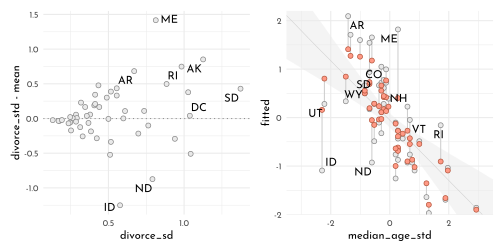
16.1.2 Error on Both Outcome and Predictor
dag2 <- dagify(D_obs ~ D + E_D,
D ~ A + M,
M ~ A,
M_obs ~ M + E_M,
exposure = "M",
outcome = "D_obs",
coords = tibble(name = c("A", "M", "D", "D_obs", "E_D", "M_obs","E_M"),
x = c(0, .5, .5, 1, 1.5, 1, 1.5),
y = c(.5, 1, 0, 0, 0, 1, 1)))
dag2 %>%
fortify() %>%
mutate(stage = if_else(name == "D_obs", "response",
if_else(name %in% c("A", "M_obs"),
"predictor", "confounds")),
name = str_replace(name, "(.*)_([a-zA-Z]*)","\\1[\\2]")) %>%
plot_dag(clr_in = clr_current) +
scale_x_continuous(limits = c(-.1, 1.6)) +
scale_y_continuous(limits = c(-.1, 1.1)) +
coord_fixed(ratio = .5) +
theme(plot.subtitle = element_text(hjust = .5, family = fnt_sel))
\[ \begin{array}{rclr} D_{\textrm{OBS}, i} & \sim & \textrm{Normal}(D_{\textrm{TRUE}}, D_{\textrm{SE}, i}) & \textrm{[distribution of observed D values]}\\ D_{\textrm{TRUE},i} & \sim & \textrm{Normal}(\mu_{i}, \sigma) & \textrm{[distribution of true D values]}\\ \mu_{i} & = & \alpha + \beta_{A} ~ A_{i} + \color{#B35136}{\beta_{M} ~ M_{\textrm{TRUE}, i}} & \textrm{[linear model]}\\ \color{#B35136}{M_{\textrm{OBS},i}} & \sim & \color{#B35136}{\textrm{Normal}(M_{\textrm{TRUE},i}, M_{\textrm{SE},i})} & \textrm{[distribution of observed M values]}\\ \color{#B35136}{M_{\textrm{TRUE},i}} & \sim & \color{#B35136}{\textrm{Normal}(0,1)} & \textrm{[distribution of true M values]} \\ \alpha & \sim & \textrm{Normal}(0, 0.2) &&\\ \beta_{A} & \sim & \textrm{Normal}(0, 0.5) &&\\ \beta_{M} & \sim & \textrm{Normal}(0, 0.5) &&\\ \sigma & \sim & \textrm{Exponential}(1) &&\\ \end{array} \]
model_divorce_error_out <- ulam(
flist = alist(
divorce_obs ~ dnorm( divorce_true, divorce_sd ),
vector[N]:divorce_true ~ dnorm( mu, sigma ),
mu <- alpha + beta_age * median_age_std + beta_marriage * marriage_true[i],
marriage_std ~ dnorm( marriage_true, marriage_sd ),
vector[N]:marriage_true ~ dnorm(0, 1),
alpha ~ dnorm( 0, 0.2 ),
beta_age ~ dnorm( 0, 0.5 ),
beta_marriage ~ dnorm( 0, 0.5 ),
sigma ~ dexp(1)
),
data = data_waffle_list,
cores = 4,
chains = 4,
log_lik = TRUE
)extract.samples(model_divorce_error_out) %>%
as_tibble() %>%
dplyr::select(divorce_true, marriage_true) %>%
summarise(divorce_true = colMeans(as_tibble(divorce_true)),
marriage_true = colMeans(as_tibble(marriage_true))) %>%
bind_cols(data_waffle %>%
dplyr::select(Loc, Divorce,divorce_std, divorce_sd,
median_age_std, marriage_std ), .) %>%
ggplot() +
geom_segment(aes(x = marriage_std, xend = marriage_true,
y = divorce_std, yend = divorce_true ),
color = clr0d ) +
geom_point(aes(x = marriage_std,
y = divorce_std),
color = clr0dd, fill = clr0,
shape = 21, size = 2) +
geom_point(aes(x = marriage_true,
y = divorce_true),
color = clr_current, fill = clr_lighten(clr_current),
shape = 21, size = 2) +
labs(subtitle = "shrinkage of both marriage rate and divorce rate")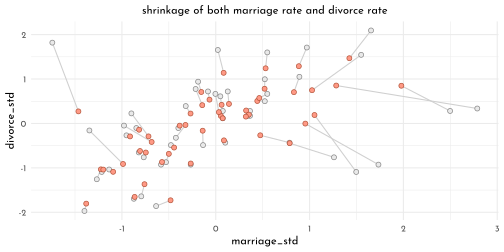
16.1.3 Measurement Terrors
dag3 <- dagify(D_obs ~ D + E_D,
D ~ A + M,
M ~ A,
M_obs ~ M + E_M,
E_M ~ P,
E_D ~ P,
exposure = "M",
outcome = "D_obs",
coords = tibble(name = c("A", "M", "D", "D_obs", "E_D", "M_obs","E_M", "P"),
x = c(0, .5, .5, 1, 1.5, 1, 1.5, 2),
y = c(.5, 1, 0, 0, 0, 1, 1, .5)))
dag3 %>%
fortify() %>%
mutate(stage = if_else(name == "D_obs", "response",
if_else(name %in% c("A", "M_obs", "P"),
"predictor", "confounds")),
name = str_replace(name, "(.*)_([a-zA-Z]*)","\\1[\\2]")) %>%
plot_dag(clr_in = clr_current) +
coord_fixed(ratio = .6,
xlim = c(-.1, 2.1),
ylim = c(-.1, 1.1)) +
theme(plot.subtitle = element_text(hjust = .5, family = fnt_sel))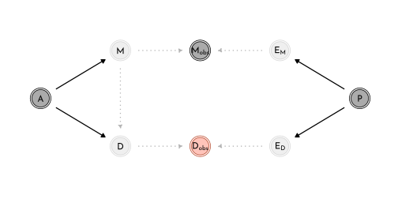
dag4 <- dagify(D_obs ~ D + E_D,
D ~ A + M,
M ~ A,
M_obs ~ M + E_M,
E_D ~ M,
exposure = "M",
outcome = "D_obs",
coords = tibble(name = c("A", "M", "D", "D_obs", "E_D", "M_obs","E_M"),
x = c(0, .5, .5, 1, 1.5, 1, 1.5),
y = c(.5, 1, 0, 0, 0, 1, 1)))
dag4 %>%
fortify() %>%
mutate(stage = if_else(name == "D_obs", "response",
if_else(name %in% c("A", "M_obs", "P"),
"predictor", "confounds")),
name = str_replace(name, "(.*)_([a-zA-Z]*)","\\1[\\2]")) %>%
plot_dag(clr_in = clr_current) +
coord_fixed(ratio = .6,
xlim = c(-.1, 1.6),
ylim = c(-.1, 1.1)) +
theme(plot.subtitle = element_text(hjust = .5, family = fnt_sel))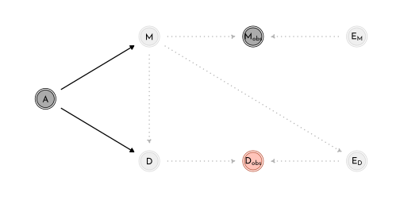
dag5 <- dagify(
A_obs ~ A + E_A,
M ~ A,
D ~ A,
exposure = "M",
outcome = "A",
coords = tibble(name = c("E_A", "A_obs", "A", "M", "D"),
x = c( 0, .5, 1, 1.5, 1.5 ),
y = c(.5, .5, .5, 1, 0)))
dag5 %>%
fortify() %>%
mutate(stage = if_else(name == "D_obs", "response",
if_else(name %in% c("A_obs", "M", "D"),
"predictor", "confounds")),
name = str_replace(name, "(.*)_([a-zA-Z]*)","\\1[\\2]")) %>%
plot_dag(clr_in = clr_current) +
coord_fixed(ratio = .6,
xlim = c(-.1, 1.6),
ylim = c(-.1, 1.1)) +
theme(plot.subtitle = element_text(hjust = .5, family = fnt_sel))
n <- 500
data_sim <- tibble(age = rnorm(n),
marriage = rnorm(n, mean = -age),
divorce = rnorm(n, mean = age),
age_obs = rnorm(n, mean = age))16.2 Missing Data
16.2.1 DAG ate my Homework
annotate_dag <- function(dag){
dag %>%
fortify() %>%
mutate(stage = if_else(name == "Hs", "response",
if_else(name %in% c("S", "D"),
"predictor", "confounds")),
name = str_replace(name, "Hs","H^'*'"))
}
dag6 <- dagify(
Hs ~ H + D,
H ~ S,
exposure = "S",
outcome = "Hs",
coords = tibble(name = c("S", "H", "D", "Hs"),
x = c( 0, 1, 0, 1 ),
y = c( 1, 1, 0, 0 ))) %>%
annotate_dag()
dag7 <- dagify(
Hs ~ H + D,
H ~ S,
D ~ S,
exposure = "S",
outcome = "Hs",
coords = tibble(name = c("S", "H", "D", "Hs"),
x = c( 0, 1, 0, 1 ),
y = c( 1, 1, 0, 0 ))) %>%
annotate_dag()
dag8 <- dagify(
Hs ~ H + D,
H ~ S + X,
D ~ X,
exposure = "S",
outcome = "Hs",
coords = tibble(name = c("S", "H", "D", "Hs", "X"),
x = c( 0, 1, 0, 1, .5 ),
y = c( 1, 1, 0, 0, .5 ))) %>%
annotate_dag()
dag9 <- dagify(
Hs ~ H + D,
H ~ S,
D ~ H,
exposure = "S",
outcome = "Hs",
coords = tibble(name = c("S", "H", "D", "Hs"),
x = c( 0, 1, 0, 1 ),
y = c( 1, 1, 0, 0 ))) %>%
annotate_dag()
list(dag6, dag7, dag8, dag9) %>%
purrr::map(plot_dag, clr_in = clr_current) %>%
wrap_plots(ncol = 2, tag_level = "new") +
plot_annotation(tag_levels = "a") &
coord_fixed(ratio = .6,
xlim = c(-.1, 1.1),
ylim = c(-.1, 1.1)) &
theme(plot.subtitle = element_text(hjust = .5, family = fnt_sel),
plot.tag = element_text(family = fnt_sel))
n <- 100
data_homework_a <- tibble(
study = rnorm(n),
homework = rbinom(n, size = 10 , inv_logit(study)),
dog = rbern( n ),
homework_missing = if_else(dog == 1, NA_integer_ , homework))
data_homework_b <- data_homework_a %>%
mutate(dog = as.integer(study > 0),
homework_missing = if_else(dog == 1, NA_integer_ , homework))
n <- 1e3
set.seed(42)
data_homework_c <- tibble(
x = rnorm(n),
study = rnorm(n),
homework = rbinom(n, size = 10 , inv_logit(2 + study - 2 * x )),
dog = as.integer(x > 0),
homework_missing = if_else(dog == 1, NA_integer_ , homework))data_homework_c_list <- data_homework_c %>%
dplyr::select(study, homework) %>%
as.list()
model_hw_full <- ulam(
flist = alist(
homework ~ binomial( 10, p ),
logit(p) <- alpha + beta_study * study,
alpha ~ normal( 0, 1 ),
beta_study ~ normal( 0, 0.5 )
),
data = data_homework_c_list,
cores = 4,
chains = 4,
seed = 42
)precis(model_hw_full) %>%
knit_precis()| param | mean | sd | 5.5% | 94.5% | n_eff | Rhat4 |
|---|---|---|---|---|---|---|
| alpha | 1.26 | 0.02 | 1.22 | 1.29 | 1264.47 | 1 |
| beta_study | 0.61 | 0.03 | 0.57 | 0.65 | 1051.59 | 1 |
data_homework_c_list2 <- data_homework_c %>%
filter(!is.na(homework_missing)) %>%
dplyr::select(study, homework) %>%
as.list()
model_hw_missing <- ulam(
flist = alist(
homework ~ binomial( 10, p ),
logit(p) <- alpha + beta_study * study,
alpha ~ normal( 0, 1 ),
beta_study ~ normal( 0, 0.5 )
),
data = data_homework_c_list2,
cores = 4,
chains = 4,
seed = 42
)precis(model_hw_missing) %>%
knit_precis()| param | mean | sd | 5.5% | 94.5% | n_eff | Rhat4 |
|---|---|---|---|---|---|---|
| alpha | 3.06 | 0.07 | 2.94 | 3.18 | 767.92 | 1.00 |
| beta_study | 0.89 | 0.06 | 0.80 | 1.00 | 680.65 | 1.01 |
data_homework_c_list3 <- data_homework_c %>%
mutate(dog = as.integer(abs(x) < 1 ),
homework_missing = if_else(dog == 1, NA_integer_ , homework)) %>%
filter(!is.na(homework_missing)) %>%
dplyr::select(study, homework) %>%
as.list()
model_hw_opposite_effect <- ulam(
flist = alist(
homework ~ binomial( 10, p ),
logit(p) <- alpha + beta_study * study,
alpha ~ normal( 0, 1 ),
beta_study ~ normal( 0, 0.5 )
),
data = data_homework_c_list3,
cores = 4,
chains = 4,
seed = 42
)precis(model_hw_opposite_effect) %>%
knit_precis()| param | mean | sd | 5.5% | 94.5% | n_eff | Rhat4 |
|---|---|---|---|---|---|---|
| alpha | 0.73 | 0.04 | 0.67 | 0.79 | 1448.69 | 1 |
| beta_study | 0.35 | 0.04 | 0.29 | 0.41 | 1329.66 | 1 |
data_homework_d <- data_homework_a %>%
mutate(dog = as.integer(homework < 5),
homework_missing = if_else(dog == 1, NA_integer_ , homework))
data_homework_c_list4 <- data_homework_d %>%
filter(!is.na(homework_missing)) %>%
dplyr::select(study, homework) %>%
as.list()
model_hw_unfixable <- ulam(
flist = alist(
homework ~ binomial( 10, p ),
logit(p) <- alpha + beta_study * study,
alpha ~ normal( 0, 1 ),
beta_study ~ normal( 0, 0.5 )
),
data = data_homework_c_list4,
cores = 4,
chains = 4,
seed = 42
)precis(model_hw_unfixable) %>%
knit_precis()| param | mean | sd | 5.5% | 94.5% | n_eff | Rhat4 |
|---|---|---|---|---|---|---|
| alpha | 0.44 | 0.10 | 0.29 | 0.60 | 640.41 | 1.01 |
| beta_study | 0.50 | 0.11 | 0.33 | 0.68 | 727.25 | 1.01 |
16.2.2 Imputing Primates
dag10 <- dagify(
K ~ M + B,
B ~ U,
M ~ U,
exposure = "M",
outcome = "K",
coords = tibble(name = c("M", "U", "K", "B"),
x = c( 0, .5, .5, 1 ),
y = c(1, 1, 0, 1)))
dag10 %>%
fortify() %>%
mutate(stage = if_else(name == "K", "response",
if_else(name %in% c("M", "B"),
"predictor", "confounds"))) %>%
plot_dag(clr_in = clr_current) +
coord_fixed(ratio = .6,
xlim = c(-.1, 1.1),
ylim = c(-.1, 1.1)) +
theme(plot.subtitle = element_text(hjust = .5, family = fnt_sel))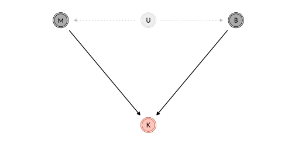
primate_dag <- function(dag){
dag %>%
fortify() %>%
mutate(stage = if_else(name == "K", "response",
if_else(name %in% c("M", "Bs", "Rb"),
"predictor", "confounds")),
name = str_replace(name, "Bs","B^'*'") %>%
str_replace( "Rb","R[B]") )
}
dag11 <- dagify(
K ~ M + B,
B ~ U,
M ~ U,
Bs ~ B + Rb,
exposure = "M",
outcome = "K",
coords = tibble(name = c("M", "U", "K", "B", "Bs", "Rb"),
x = c( 0, .5, .5, 1, 1, .5 ),
y = c(.75, .75, 0, .75, 1.5, 1.5))) %>%
primate_dag()
dag12 <- dagify(
K ~ M + B,
B ~ U,
M ~ U,
Bs ~ B + Rb,
Rb ~ M,
exposure = "M",
outcome = "K",
coords = tibble(name = c("M", "U", "K", "B", "Bs", "Rb"),
x = c( 0, .5, .5, 1, 1, .5 ),
y = c(.75, .75, 0, .75, 1.5, 1.5))) %>%
primate_dag()
dag13 <- dagify(
K ~ M + B,
B ~ U,
M ~ U,
Bs ~ B + Rb,
Rb ~ B,
exposure = "M",
outcome = "K",
coords = tibble(name = c("M", "U", "K", "B", "Bs", "Rb"),
x = c( 0, .5, .5, 1, 1, .5 ),
y = c(.75, .75, 0, .75, 1.5, 1.5))) %>%
primate_dag()
list(dag11, dag12, dag13) %>%
purrr::map(plot_dag, clr_in = clr_current) %>%
wrap_plots(nrow = 1, tag_level = "new") +
plot_annotation(tag_levels = "a") &
coord_fixed(ratio = .6,
xlim = c(-.1, 1.1),
ylim = c(-.1, 1.6)) &
theme(plot.subtitle = element_text(hjust = .5, family = fnt_sel),
plot.tag = element_text(family = fnt_sel))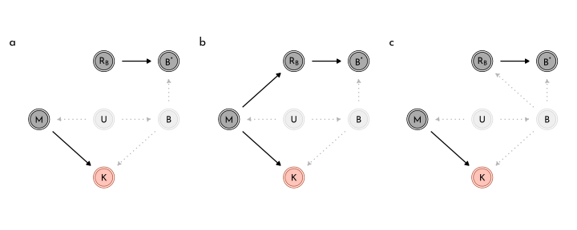
dagify(
K ~ M + B,
B ~ U + V,
M ~ U,
Bs ~ B + Rb,
Rb ~ V,
exposure = "M",
outcome = "K",
coords = tibble(name = c("M", "U", "K", "B", "Bs", "Rb", "V"),
x = c( 0, .5, .5, 1, 1.5, 1.5, 1.25 ),
y = c(.75, .75, 0, .75, .75, 0, .375))) %>%
primate_dag() %>%
plot_dag(clr_in = clr_current) +
coord_fixed(ratio = .6,
xlim = c(-.1, 1.6),
ylim = c(-.1, .87)) +
theme(plot.subtitle = element_text(hjust = .5, family = fnt_sel))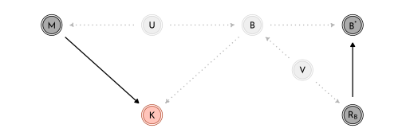
\[ \begin{array}{rclr} K_{i} & \sim & \textrm{Normal}(\mu_{i}, \sigma) & \textrm{[ distribution for outcome }k\textrm{ ]}\\ \mu_{i} & = & \alpha + \beta_{B} \color{#B35136}{B_{i}} + \beta_{M}~\textrm{log} M_{i} & \textrm{[ linear model ]}\\ \color{#B35136}{B_{i}} & \sim & \color{#B35136}{\textrm{Normal}(\nu, \sigma_{B})} & \textrm{[ distribution of obs/missing }B\textrm{ ]}\\ \alpha & \sim & \textrm{Normal}(0,0.5) & \\ \beta_{B} & \sim & \textrm{Normal}(0,0.5) & \\ \beta_{M} & \sim & \textrm{Normal}(0,0.5) & \\ \sigma & \sim & \textrm{Exponential}(1) & \\ \nu & \sim & \textrm{Normal}(0.5, 1) & \\ \sigma_{B} & \sim & \textrm{Exponential}(1) & \\ \end{array} \]
data(milk)
data_milk_full <- milk %>%
as_tibble() %>%
mutate(mass.log = log(mass),
neocortex.prop = neocortex.perc / 100,
across(.cols = c(`kcal.per.g`, `neocortex.prop`, `mass.log`),
.fns = standardize,
.names = "{str_remove_all(.col, '\\\\..*')}_std"))
data_milk_list <- data_milk_full %>%
dplyr::select(species, kcal_std, neocortex_std, mass_std) %>%
as.list()
model_primates_imputed <- ulam(
flist = alist(
kcal_std ~ dnorm( mu, sigma ),
mu <- alpha + beta_brain * neocortex_std + beta_mass * mass_std,
neocortex_std ~ dnorm( nu, sigma_brain ),
c( alpha, nu ) ~ dnorm( 0, 0.5 ),
c(beta_brain, beta_mass ) ~ dnorm( 0, 0.5 ),
sigma_brain ~ dexp(1),
sigma ~ dexp(1)
),
data = data_milk_list,
cores = 4,
chains = 4,
seed = 42
)precis(model_primates_imputed, depth = 2) %>%
knit_precis()| param | mean | sd | 5.5% | 94.5% | n_eff | Rhat4 |
|---|---|---|---|---|---|---|
| nu | -0.06 | 0.21 | -0.39 | 0.28 | 2210.15 | 1.00 |
| alpha | 0.03 | 0.17 | -0.23 | 0.29 | 2240.59 | 1.00 |
| beta_mass | -0.55 | 0.20 | -0.85 | -0.22 | 1114.24 | 1.00 |
| beta_brain | 0.50 | 0.23 | 0.11 | 0.87 | 831.86 | 1.01 |
| sigma_brain | 1.01 | 0.17 | 0.77 | 1.33 | 1444.15 | 1.00 |
| sigma | 0.84 | 0.14 | 0.64 | 1.08 | 1255.77 | 1.00 |
| neocortex_std_impute[1] | -0.60 | 0.90 | -1.99 | 0.84 | 2237.08 | 1.00 |
| neocortex_std_impute[2] | -0.70 | 0.94 | -2.18 | 0.82 | 2266.74 | 1.00 |
| neocortex_std_impute[3] | -0.70 | 0.93 | -2.14 | 0.80 | 2007.44 | 1.00 |
| neocortex_std_impute[4] | -0.30 | 0.90 | -1.73 | 1.12 | 2470.97 | 1.00 |
| neocortex_std_impute[5] | 0.44 | 0.90 | -0.99 | 1.89 | 2917.91 | 1.00 |
| neocortex_std_impute[6] | -0.20 | 0.91 | -1.57 | 1.25 | 2303.80 | 1.00 |
| neocortex_std_impute[7] | 0.21 | 0.90 | -1.22 | 1.61 | 3195.30 | 1.00 |
| neocortex_std_impute[8] | 0.26 | 0.89 | -1.15 | 1.66 | 2089.83 | 1.00 |
| neocortex_std_impute[9] | 0.50 | 0.87 | -0.86 | 1.91 | 2308.11 | 1.00 |
| neocortex_std_impute[10] | -0.44 | 0.88 | -1.84 | 0.92 | 2664.65 | 1.00 |
| neocortex_std_impute[11] | -0.30 | 0.90 | -1.75 | 1.19 | 2810.75 | 1.00 |
| neocortex_std_impute[12] | 0.15 | 0.89 | -1.27 | 1.53 | 2816.22 | 1.00 |
data_milk_list2 <- data_milk_full %>%
filter(!is.na(neocortex_std)) %>%
dplyr::select(species, kcal_std, neocortex_std, mass_std) %>%
as.list()
model_primates_non_missing <- ulam(
flist = alist(
kcal_std ~ dnorm( mu, sigma ),
mu <- alpha + beta_brain * neocortex_std + beta_mass * mass_std,
neocortex_std ~ dnorm( nu, sigma_brain ),
c( alpha, nu ) ~ dnorm( 0, 0.5 ),
c(beta_brain, beta_mass ) ~ dnorm( 0, 0.5 ),
sigma_brain ~ dexp(1),
sigma ~ dexp(1)
),
data = data_milk_list2,
cores = 4,
chains = 4,
seed = 42
)precis(model_primates_non_missing) %>%
knit_precis()| param | mean | sd | 5.5% | 94.5% | n_eff | Rhat4 |
|---|---|---|---|---|---|---|
| nu | 0.00 | 0.23 | -0.37 | 0.36 | 1778.70 | 1 |
| alpha | 0.10 | 0.19 | -0.20 | 0.40 | 1423.18 | 1 |
| beta_mass | -0.64 | 0.26 | -1.04 | -0.20 | 923.00 | 1 |
| beta_brain | 0.60 | 0.29 | 0.12 | 1.06 | 870.94 | 1 |
| sigma_brain | 1.03 | 0.18 | 0.79 | 1.37 | 1908.36 | 1 |
| sigma | 0.87 | 0.19 | 0.63 | 1.22 | 871.92 | 1 |
missing_mean <- coeftab(model_primates_non_missing,
model_primates_imputed)@coefs %>%
as.data.frame() %>%
rownames_to_column(var = "param") %>%
as_tibble() %>%
filter(param %in% c("beta_brain", "beta_mass"))
coeftab(model_primates_non_missing,
model_primates_imputed)@se %>%
as.data.frame() %>%
rownames_to_column(var = "param") %>%
as_tibble() %>%
filter(param %in% c("beta_brain", "beta_mass")) %>%
set_names(nm = c("param", names(missing_mean)[2:3]))%>%
pivot_longer(-param, names_to = "model", values_to = "se") %>%
left_join(missing_mean %>%
pivot_longer(-param, names_to = "model", values_to = "mean")) %>%
mutate(model = str_remove(model, "model_primates_")) %>%
ggplot(aes(y = model)) +
geom_pointrange(aes(x = mean, xmin = mean - se, xmax = mean+se),
color = clr0dd, fill = clr0, shape = 21) +
facet_grid(param ~ ., switch = "y") +
theme(strip.placement = "outside")
primates_posterior <- extract.samples(model_primates_imputed) %>%
as_tibble()
imputed_neocortex <- primates_posterior$neocortex_std_impute %>%
as_tibble() %>%
pivot_longer(everything()) %>%
group_by(name) %>%
summarise(pi = list(tibble(value = quantile(value, probs = c(.055, .25, .5, .75, .955)),
label = c("ll", "l", "m", "h", "hh")))) %>%
mutate(name = str_remove(name, "V") %>% as.integer()) %>%
arrange(name) %>%
unnest(pi) %>%
pivot_wider(names_from = label, values_from = value) %>%
bind_cols(data_milk_full %>% filter(is.na(neocortex.perc)),.)
p1 <- data_milk_list %>%
as_tibble() %>%
filter(!is.na(neocortex_std)) %>%
ggplot(aes(x = neocortex_std, y = kcal_std)) +
geom_pointrange(data = imputed_neocortex,
aes(xmin = ll, x = m ,xmax = hh),
color = clr0dd, fill = clr0,
shape = 21, fatten = 2.6) +
geom_point(color = clr_current, size = 1.6)
p2 <- data_milk_list %>%
as_tibble() %>%
filter(!is.na(neocortex_std)) %>%
ggplot(aes(y = neocortex_std, x = mass_std)) +
geom_pointrange(data = imputed_neocortex,
aes(ymin = ll, y = m ,ymax = hh),
color = clr0dd, fill = clr0,
shape = 21, fatten = 2.6) +
geom_point(color = clr_current, size = 1.6)
p1 + p2
Updating the imputation within the model to take the correlation of mass_std and neocortex_std into account:
\[ (M_{i}, B_{i}) \sim \textrm{MVNormal}\left(( \mu_{M}, \mu_{B}), S \right) \]
model_primates_impute_covar <- ulam(
flist = alist(
# kcal as function of neocortex and mass
kcal_std ~ dnorm( mu, sigma ),
mu <- alpha + beta_brain * neocortex_merge + beta_mass * mass_std,
# mass and neocortex correlation
mass_neocortex ~ multi_normal( c( mu_mass, mu_neocortex ), Rho_nm, Sigma_nm ),
matrix[29, 2]:mass_neocortex <<- append_col( mass_std, neocortex_merge ),
# define neocortex_merge as mix of observed and imputed values
vector[29]:neocortex_merge <- merge_missing( neocortex_std, neocortex_std_impute ),
# priors
c( alpha, mu_mass, mu_neocortex ) ~ dnorm( 0, 0.5 ),
c( beta_brain, beta_mass ) ~ dnorm( 0, 0.5 ),
sigma ~ dexp(1),
Rho_nm ~ lkj_corr(2),
Sigma_nm ~ dexp(1)
),
data = data_milk_list,
cores = 4,
chains = 4
)precis(model_primates_impute_covar, depth = 3,
pars = c("beta_mass", "beta_brain", "Rho_nm")) %>%
knit_precis()| param | mean | sd | 5.5% | 94.5% | n_eff | Rhat4 |
|---|---|---|---|---|---|---|
| beta_mass | -0.65 | 0.22 | -0.98 | -0.29 | 1153.75 | 1 |
| beta_brain | 0.59 | 0.25 | 0.17 | 0.96 | 938.43 | 1 |
| Rho_nm[1,1] | 1.00 | 0.00 | 1.00 | 1.00 | NaN | NaN |
| Rho_nm[1,2] | 0.61 | 0.13 | 0.37 | 0.79 | 1300.92 | 1 |
| Rho_nm[2,1] | 0.61 | 0.13 | 0.37 | 0.79 | 1300.92 | 1 |
| Rho_nm[2,2] | 1.00 | 0.00 | 1.00 | 1.00 | NaN | NaN |
primates_posterior_covar <- extract.samples(model_primates_impute_covar) %>%
as_tibble()
imputed_neocortex_covar <- primates_posterior_covar$neocortex_std_impute %>%
as_tibble() %>%
pivot_longer(everything()) %>%
group_by(name) %>%
summarise(pi = list(tibble(value = quantile(value, probs = c(.055, .25, .5, .75, .955)),
label = c("ll", "l", "m", "h", "hh")))) %>%
mutate(name = str_remove(name, "V") %>% as.integer()) %>%
arrange(name) %>%
unnest(pi) %>%
pivot_wider(names_from = label, values_from = value) %>%
bind_cols(data_milk_full %>% filter(is.na(neocortex.perc)),.)
p1 <- data_milk_list %>%
as_tibble() %>%
filter(!is.na(neocortex_std)) %>%
ggplot(aes(x = neocortex_std, y = kcal_std)) +
geom_pointrange(data = imputed_neocortex_covar,
aes(xmin = ll, x = m ,xmax = hh),
color = clr0dd, fill = clr0,
shape = 21, fatten = 2.6) +
geom_point(color = clr_current, size = 1.6)
p2 <- data_milk_list %>%
as_tibble() %>%
filter(!is.na(neocortex_std)) %>%
ggplot(aes(y = neocortex_std, x = mass_std)) +
geom_pointrange(data = imputed_neocortex_covar,
aes(ymin = ll, y = m ,ymax = hh),
color = clr0dd, fill = clr0,
shape = 21, fatten = 2.6) +
geom_point(color = clr_current, size = 1.6)
p1 + p2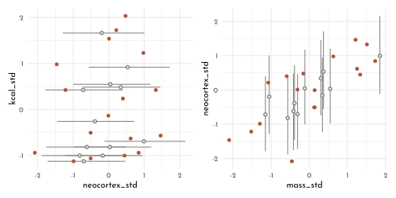
stancode(model_primates_imputed)#> functions{
#>
#>
#> vector merge_missing( int[] miss_indexes , vector x_obs , vector x_miss ) {
#> int N = dims(x_obs)[1];
#> int N_miss = dims(x_miss)[1];
#> vector[N] merged;
#> merged = x_obs;
#> for ( i in 1:N_miss )
#> merged[ miss_indexes[i] ] = x_miss[i];
#> return merged;
#> }
#> }
#> data{
#> int species[29];
#> vector[29] kcal_std;
#> vector[29] mass_std;
#> vector[29] neocortex_std;
#> int neocortex_std_missidx[12];
#> }
#> parameters{
#> real nu;
#> real alpha;
#> real beta_mass;
#> real beta_brain;
#> real<lower=0> sigma_brain;
#> real<lower=0> sigma;
#> vector[12] neocortex_std_impute;
#> }
#> model{
#> vector[29] mu;
#> vector[29] neocortex_std_merge;
#> sigma ~ exponential( 1 );
#> sigma_brain ~ exponential( 1 );
#> beta_brain ~ normal( 0 , 0.5 );
#> beta_mass ~ normal( 0 , 0.5 );
#> alpha ~ normal( 0 , 0.5 );
#> nu ~ normal( 0 , 0.5 );
#> neocortex_std_merge = merge_missing(neocortex_std_missidx, to_vector(neocortex_std), neocortex_std_impute);
#> neocortex_std_merge ~ normal( nu , sigma_brain );
#> for ( i in 1:29 ) {
#> mu[i] = alpha + beta_brain * neocortex_std_merge[i] + beta_mass * mass_std[i];
#> }
#> kcal_std ~ normal( mu , sigma );
#> }16.2.3 Where is Your God Now?
data(Moralizing_gods)
data_gods <- Moralizing_gods %>%
as_tibble()
data_gods %>%
group_by(moralizing_gods) %>%
count()#> # A tibble: 3 × 2
#> # Groups: moralizing_gods [3]
#> moralizing_gods n
#> <int> <int>
#> 1 0 17
#> 2 1 319
#> 3 NA 528data_gods %>%
group_by(moralizing_gods, writing) %>%
count() %>%
pivot_wider(names_from = "writing",
values_from = "n")#> # A tibble: 3 × 3
#> # Groups: moralizing_gods [3]
#> moralizing_gods `0` `1`
#> <int> <int> <int>
#> 1 0 16 1
#> 2 1 9 310
#> 3 NA 442 86data_gods %>%
ggplot(aes(x = year, y = population)) +
geom_point(aes(color = factor(moralizing_gods),
shape = factor(moralizing_gods)),
size = 1.5, alpha = .7)+
scale_shape_manual(values = c(`0` = 1, `1` = 19), na.value = 4)+
scale_color_manual(values = c(`0` = clr_current, `1` = clr_current), na.value = clr0dd) +
theme(legend.position = "none")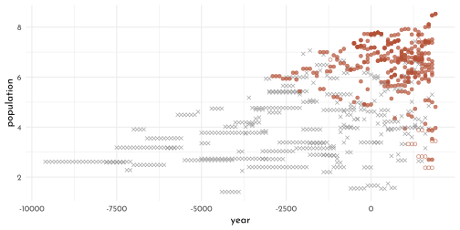
dagify(
Gs ~ G + Rg,
Rg ~ W,
W ~ P,
P ~ G,
exposure = "G",
outcome = "P",
coords = tibble(name = c("P", "G", "Gs", "W", "Rg"),
x = c( 0, .5, 1, .25, .75 ),
y = c(1, 1, 1, 0, 0))) %>%
fortify() %>%
mutate(stage = if_else(name == "P", "response",
if_else(name %in% c("Gs", "W", "Rg"),
"predictor", "confounds")),
name = str_replace(name, "Gs","G^'*'") %>%
str_replace( "Rg","R[G]")) %>%
plot_dag(clr_in = clr_current) +
coord_fixed(ratio = .35,
xlim = c(-.1, 1.1),
ylim = c(-.1, 1.1)) +
theme(plot.subtitle = element_text(hjust = .5, family = fnt_sel))
data_gods %>%
filter(polity == "Big Island Hawaii") %>%
dplyr::select(year, writing,moralizing_gods) %>%
t()\[\begin{bmatrix} 1000 &1100 &1200 \\1300 &1400 &1500 \\1600 &1700 &1800 \\0 &0 &0 \\0 &0 &0 \\0 &0 &0 \\NA &NA &NA \\NA &NA &NA \\NA &NA &1 \\ \end{bmatrix}\]
16.3 Categorical Errors and Discrete Absences
16.3.1 Discrete Cats
dagify(
Cs ~ C + Rc,
N ~ C,
exposure = "Cs",
outcome = "N",
coords = tibble(name = c("Rc", "Cs", "C", "N"),
x = c( 0, .5, 1, 1.5 ),
y = c(0, 0, 0, 0))) %>%
fortify() %>%
mutate(stage = if_else(name == "N", "response",
if_else(name %in% c("Cs", "Rc"),
"predictor", "confounds")),
name = str_replace(name, "Cs","C^'*'") %>%
str_replace( "Rc","R[C]")) %>%
plot_dag(clr_in = clr_current) +
coord_fixed(ratio = 1,
xlim = c(-.1, 1.6),
ylim = c(-.1, .1)) +
theme(plot.subtitle = element_text(hjust = .5, family = fnt_sel))
\[ \begin{array}{rclr} N_{i} & \sim & \textrm{Poisson}(\lambda_{i}) & \textrm{[ probability of notes sung ]}\\ \textrm{log}~\lambda_{i} & = & \alpha + \beta~C_{i} & \textrm{[ rate of notes as funtion of cat ]}\\ C_{i} & \sim & \textrm{Bernoulli}(k) & \textrm{[ probability cat is present ]} \\ R_{C, i} & \sim & \textrm{Bernoulli}(r) & \textrm{[ probability of not knowing } C_{i} \textrm{ ]} \\ \end{array} \]
set.seed(42)
n_houses <- 50
alpha <- 5
beta <- -3
k <- .5
r <- .2
data_cats <- tibble(
cat = rbern( n_houses, k ),
notes = rpois( n_houses, alpha + beta * cat ),
r_c = rbern( n_houses, r ),
cat_obs = if_else(r_c == 0, cat , -9L)
)The likelihood to observe \(N_i\) notes, conditional on \(C_i\) is
\[ \begin{array}{rcl} \textrm{Pr}(N_{i}) & = & (\textrm{probability of cat}) (\textrm{probability of } N_{i} \textrm{ when there is a cat})~+ \\ & & (\textrm{probability of no cat}) (\textrm{probability of } N_{i} \textrm{ whenthere is no cat}) \\ \textrm{Pr}(N_{i}) & = & \textrm{Pr}(C_{i} = 1)~\textrm{Pr}(N_{i} | C_{i} = 1) + \textrm{Pr}(C_{i} = 0)~\textrm{Pr}(N_{i} | C_{i} = 0) \end{array} \]
model_cat <- ulam(
flist = alist(
# singing bird model
# cat presence is known
notes | r_c == 0 ~ poisson(lambda),
log(lambda) <- alpha + beta * cat_obs,
# cat NA
notes | r_c == 1 ~ custom(
log_sum_exp(
log(k) + poisson_lpmf( notes | exp(alpha + beta)),
log(1 - k) + poisson_lpmf(notes | exp(alpha))
)
),
# priors
alpha ~ normal( 0, 1 ),
beta ~ normal( 0, 0.5 ),
# sneaking cat model
cat | r_c == 0 ~ bernoulli(k),
k ~ beta( 2, 2 )
),
cores = 4,
chain = 4,
seed = 42,
data = data_cats
)\[ \textrm{Pr}(C_{i} = 1 | N_{i} ) = \frac{\textrm{Pr}(N_{i} | C_{i} = 1 )~\textrm{Pr}(C_{i} = 1)}{\textrm{Pr}(N_{i} | C_{i} = 1)~\textrm{Pr}(C_{i} = 1) + \textrm{Pr}(N_{i} | C_{i} = 0)~\textrm{Pr}(C_{i} = 0)} \]
data_cats_list <- data_cats %>%
as.list() %>%
c(., list(n_houses = n_houses))
model_cat_gq <- ulam(
flist = alist(
# singing bird model
# cat presence is known
notes | r_c == 0 ~ poisson(lambda),
log(lambda) <- alpha + beta * cat_obs,
# cat NA
notes | r_c == 1 ~ custom(
log_sum_exp(
log(k) + poisson_lpmf( notes | exp(alpha + beta)),
log(1 - k) + poisson_lpmf(notes | exp(alpha))
)
),
# priors
alpha ~ normal( 0, 1 ),
beta ~ normal( 0, 0.5 ),
# sneaking cat model
cat | r_c == 0 ~ bernoulli(k),
k ~ beta( 2, 2 ),
# imputed values
gq> vector[n_houses]:pr_c1 <- exp(lp_c1) / (exp(lp_c1) + exp(lp_c0)),
gq> vector[n_houses]:lp_c1 <- log(k) + poisson_lpmf(notes[i] | exp(alpha + beta)),
gq> vector[n_houses]:lp_c0 <- log(1 - k) + poisson_lpmf(notes[i] | exp(alpha))
),
cores = 4,
chain = 4,
seed = 42,
data = data_cats_list
)Example for a non-binary categorical value (multiple options, eg up to two cats):
notes | r_c == 1 ~ custom(
log_sum_exp(
binomial_lpmf(2|2, k) + poisson_lpmf( notes | exp(alpha + beta * 2)),
binomial_lpmf(1|2, k) + poisson_lpmf( notes | exp(alpha + beta * 1)),
binomial_lpmf(0|2, k) + poisson_lpmf(notes | exp(alpha + beta * 0))
)The extension for multiple categorical variables (eg. cat and dog) with missing values expands to the following.
If both cat and dog are NA:
\[ \begin{array}{rcl} \textrm{Pr}(N_{i}) & = & \textrm{Pr}(C_{i} = 1)~\textrm{Pr}(D_{i} = 1)~\textrm{Pr}(N_{i} | C_{i} = 1, D_{i} = 1)~+\\ &&\textrm{Pr}(C_{i} = 1)~\textrm{Pr}(D_{i} = 0)~\textrm{Pr}(N_{i} | C_{i} = 1, D_{i} = 0)~+ \\ &&\textrm{Pr}(C_{i} = 0)~\textrm{Pr}(D_{i} = 1)~\textrm{Pr}(N_{i} | C_{i} = 0, D_{i} = 1)~+ \\ &&\textrm{Pr}(C_{i} = 0)~\textrm{Pr}(D_{i} = 0)~\textrm{Pr}(N_{i} | C_{i} = 0, D_{i} = 0) \end{array} \]
If cat is NA and dog is known present:
\[ \begin{array}{rcl} \textrm{Pr}(N_{i}) & = & \textrm{Pr}(C_{i} = 1)~\textrm{Pr}(N_{i} | C_{i} = 1, D_{i} = 1) + \textrm{Pr}(C_{i} = 0)~\textrm{Pr}(N_{i} | C_{i} = 0, D_{i} = 1) \end{array} \]
likewise, if dog is NA and cat is known absent:
\[ \begin{array}{rcl} \textrm{Pr}(N_{i}) & = & \textrm{Pr}(D_{i} = 1)~\textrm{Pr}(N_{i} | C_{i} = 0, D_{i} = 1) + \textrm{Pr}(D_{i} = 0)~\textrm{Pr}(N_{i} | C_{i} = 0, D_{i} = 0) \end{array} \] (all combinations need to be accounted for though)
library(rlang)
chapter15_models <- env(
)
write_rds(chapter15_models, "envs/chapter15_models.rds")16.4 Homework
E1
\[ \begin{array}{rcl} T_{i} & \sim & \textrm{Poisson}(\mu_{i})\\ \textrm{log}~\mu_{i} & = & \alpha + \beta ~ \textrm{log}~P_{\textrm{TRUE},i}\\ P_{\textrm{TRUE}, i} & \sim & \textrm{Normal}(P_{\textrm{OBS},i}, P_{\textrm{SE}})\\ \alpha & \sim & \textrm{Normal}(0, 1.5)\\ \beta & \sim & \textrm{Normal}(0, 1) \\ P_{SE} & \sim & \textrm{Exponential}(1) \end{array} \]
E2
\[ \begin{array}{rcl} T_{i} & \sim & \textrm{Poisson}(\mu_{i})\\ \textrm{log}~\mu_{i} & = & \alpha + \beta ~ P_{\textrm{TRUE},i}\\ P_{\textrm{TRUE}, i} & \sim & \textrm{Normal}(\overline{P_{\textrm{OBS}}}, P_{\textrm{SE}})\\ \alpha & \sim & \textrm{Normal}(0, 1.5)\\ \beta & \sim & \textrm{Normal}(0, 1) \\ \overline{P_{\textrm{OBS}}} & \sim & \textrm{Normal}(0, 1) \\ P_{SE} & \sim & \textrm{Exponential}(1) \end{array} \]
M1
\[ \begin{array}{rclr} K_{i} & \sim & \textrm{Normal}(\mu_{i}, \sigma) & \textrm{[ distribution for outcome }k\textrm{ ]}\\ \mu_{i} & = & \alpha + \beta_{B} \color{#B35136}{B_{i}} + \beta_{M}~\textrm{log} M_{i} & \textrm{[ linear model ]}\\ \color{#B35136}{B_{i}} & \sim & \color{#B35136}{\textrm{Normal}(\nu, \sigma_{B})} & \textrm{[ distribution of obs/missing }B\textrm{ ]}\\ \alpha & \sim & \textrm{Normal}(0,0.5) & \\ \beta_{B} & \sim & \textrm{Normal}(0,0.5) & \\ \beta_{M} & \sim & \textrm{Normal}(0,0.5) & \\ \sigma & \sim & \textrm{Exponential}(1) & \\ \nu & \sim & \textrm{Normal}(0.5, 1) & \\ \sigma_{B} & \sim & \textrm{Exponential}(1) & \\ \end{array} \]
This imputation model assumes that the data generating process behind brain size in primates is gaussian with the average \(\nu\) and a standard deviation of \(\sigma_{B}\). It furthermore assumes that error in measurement is also gaussian, centered on the actual values (0), but with an variance that is equal to the on in the data generating process. Importantly, the error generating process is assumed to be random.
M2
data_milk_list2 <- data_milk_full %>%
dplyr::select(species, kcal_std,
neocortex_prop = neocortex.prop, mass_std) %>%
as.list()
model_primates_beta <- ulam(
flist = alist(
kcal_std ~ dnorm( mu, sigma ),
mu <- alpha +
beta_brain * ( neocortex_prop - 0.67 ) +
beta_mass * mass_std,
neocortex_prop ~ dbeta2( nu, theta_brain ),
nu ~ dbeta( 2, 2 ),
alpha ~ dnorm( 0, 0.5 ),
beta_brain ~ dnorm( 0, 10 ),
beta_mass ~ dnorm( 0, 0.5 ),
theta_brain ~ dexp(1),
sigma ~ dexp(1),
vector[12]:neocortex_prop_impute ~ uniform( 0, 1)
),
data = data_milk_list2,
cores = 4,
chains = 4,
seed = 42
)primates_posterior <- extract.samples(model_primates_beta) %>%
as_tibble()
imputed_neocortex <- primates_posterior$neocortex_prop_impute %>%
as_tibble() %>%
pivot_longer(everything()) %>%
group_by(name) %>%
summarise(pi = list(tibble(value = quantile(value, probs = c(.055, .25, .5, .75, .955)),
label = c("ll", "l", "m", "h", "hh")))) %>%
mutate(name = str_remove(name, "V") %>% as.integer()) %>%
arrange(name) %>%
unnest(pi) %>%
pivot_wider(names_from = label, values_from = value) %>%
bind_cols(data_milk_full %>% filter(is.na(neocortex.perc)),.)
data_milk_list2 %>%
as_tibble() %>%
filter(!is.na(neocortex_prop)) %>%
ggplot(aes(x = neocortex_prop, y = kcal_std)) +
geom_pointrange(data = imputed_neocortex,
aes(xmin = ll, x = m ,xmax = hh),
color = clr0dd, fill = clr0,
shape = 21, fatten = 2.6) +
geom_point(color = clr_current, size = 1.6)
M3
model_divorce_double_se <- ulam(
flist = alist(
divorce_obs ~ dnorm( divorce_true, divorce_sd * 2.0 ),
vector[N]:divorce_true ~ dnorm( mu, sigma ),
mu <- alpha + beta_age * median_age_std + beta_marriage * marriage_std,
alpha ~ dnorm( 0, 0.2 ),
beta_age ~ dnorm( 0, 0.5 ),
beta_marriage ~ dnorm( 0, 0.5 ),
sigma ~ dexp(1)
),
data = data_waffle_list,
cores = 4,
chains = 4,
log_lik = TRUE
)\(\rightarrow\) lots of divergent transitions
model_divorce_double_se_noncentered <- ulam(
flist = alist(
divorce_obs ~ dnorm( mu + z_true * sigma, divorce_sd * 2.0 ),
vector[N]:z_true ~ dnorm( 0, 1 ),
mu <- alpha + beta_age * median_age_std + beta_marriage * marriage_std,
alpha ~ dnorm( 0, 0.2 ),
beta_age ~ dnorm( 0, 0.5 ),
beta_marriage ~ dnorm( 0, 0.5 ),
sigma ~ dexp(1)
),
data = data_waffle_list,
cores = 4,
chains = 4,
log_lik = TRUE
)precis(model_divorce) %>%
knit_precis()| param | mean | sd | 5.5% | 94.5% | n_eff | Rhat4 |
|---|---|---|---|---|---|---|
| alpha | -0.05 | 0.09 | -0.20 | 0.10 | 1585.93 | 1 |
| beta_age | -0.61 | 0.16 | -0.86 | -0.36 | 1169.42 | 1 |
| beta_marriage | 0.05 | 0.17 | -0.21 | 0.32 | 1014.84 | 1 |
| sigma | 0.59 | 0.10 | 0.43 | 0.76 | 769.88 | 1 |
precis(model_divorce_double_se_noncentered) %>%
knit_precis()| param | mean | sd | 5.5% | 94.5% | n_eff | Rhat4 |
|---|---|---|---|---|---|---|
| alpha | -0.12 | 0.10 | -0.28 | 0.04 | 2738.54 | 1.00 |
| beta_age | -0.65 | 0.17 | -0.91 | -0.37 | 2324.01 | 1.00 |
| beta_marriage | 0.19 | 0.19 | -0.12 | 0.48 | 2191.71 | 1.00 |
| sigma | 0.15 | 0.11 | 0.01 | 0.35 | 815.90 | 1.01 |
M4
dagify(
Z ~ Y,
Y ~ X,
exposure = "X",
outcome = "Y",
coords = tibble(name = c("X", "Y", "Z"),
x = c( 0, .5, 1 ),
y = c(0, 0, 0))) %>%
fortify() %>%
mutate(stage = if_else(name == "Y", "response",
if_else(name %in% c("Z", "X"),
"predictor", "confounds"))) %>%
plot_dag(clr_in = clr_current) +
coord_fixed(ratio = 1,
xlim = c(-.1, 1.1),
ylim = c(-.1, .1)) +
theme(plot.subtitle = element_text(hjust = .5,
family = fnt_sel))
n <- 500
data_sim_dag <- tibble(x = rnorm(n),
y = rnorm(n, x),
z = rnorm(n , y))
model_sim_dag <- ulam(
flist = alist(
y ~ dnorm( mu , sigma ),
mu <- alpha + beta_x * x + beta_z * z,
c(alpha, beta_x, beta_z) ~ dnorm( 0, 1 ),
sigma ~ dexp(1)
),
data = data_sim_dag,
chains = 4,
cores = 4)precis(model_sim_dag) %>%
knit_precis()| param | mean | sd | 5.5% | 94.5% | n_eff | Rhat4 |
|---|---|---|---|---|---|---|
| beta_z | 0.45 | 0.02 | 0.41 | 0.48 | 1441.44 | 1 |
| beta_x | 0.51 | 0.04 | 0.45 | 0.57 | 1426.12 | 1 |
| alpha | -0.01 | 0.03 | -0.06 | 0.04 | 1870.59 | 1 |
| sigma | 0.72 | 0.02 | 0.68 | 0.75 | 1857.25 | 1 |
M5
birds_posterior <- extract.samples(model_cat_gq) %>%
as_tibble()
birds_posterior$pr_c1 %>%
as_tibble() %>%
t() %>%
bind_cols(data_cats_list %>%
as_tibble() %>%
mutate(cat_idx = row_number()), .) %>%
pivot_longer(starts_with("..")) %>%
group_by(cat_idx) %>%
summarise(cat = cat[[1]],
pi = list(tibble(value = c(quantile(value, probs = c(.055, .25, .5, .75, .955)), mean(value)),
labels = c('ll', 'l', 'm', 'h', 'hh', 'mean')))) %>%
ungroup() %>%
unnest(pi) %>%
pivot_wider(names_from = "labels", values_from = "value") %>%
mutate(cat_idx = fct_reorder(as.character(cat_idx), mean)) %>%
ggplot(aes(x = cat_idx)) +
geom_linerange(aes(ymin = ll, ymax = hh),
color = clr_current, size = .2)+
geom_point(aes(y = m, shape = factor(cat)),
color = clr_current, fill = clr_lighten(clr_current, .8)) +
coord_cartesian(ylim = c(0, 1)) +
scale_shape_manual(values = c(`0` = 21, `1` = 19), guide = FALSE)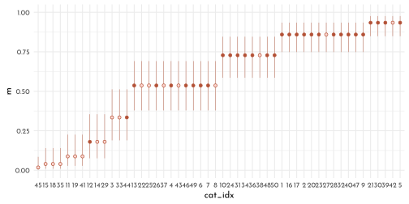
M6
n <- 100
data_sim_dog <- tibble(.idx = 1:n,
s = rnorm(n),
h = rbinom(n, size = 10, inv_logit(s)),
d = rbern(n),
h_missing = if_else(d == 1, NA_integer_, h))data_sim_dog_list_1 <- data_sim_dog %>%
dplyr::select(-.idx) %>%
filter(!is.na(h_missing)) %>%
as.list()
model_sim_dog_1 <- ulam(
flist = alist(
h_missing ~ binomial( 10 , p ),
logit(p) <- alpha + beta_s * s,
alpha ~ normal( 0 , 1.5 ),
beta_s ~ normal( 0 , 0.5 )
),
data = data_sim_dog_list_1,
chains = 4,
cores = 4)precis( model_sim_dog_1 ) %>%
knit_precis()| param | mean | sd | 5.5% | 94.5% | n_eff | Rhat4 |
|---|---|---|---|---|---|---|
| alpha | -0.13 | 0.10 | -0.29 | 0.02 | 1336.04 | 1 |
| beta_s | 0.97 | 0.12 | 0.79 | 1.16 | 1138.22 | 1 |
data_sim_dog_list_2 <- data_sim_dog %>%
dplyr::select(-.idx) %>%
mutate(h_missing = if_else(s > 0, NA_integer_, h)) %>%
filter(!is.na(h_missing)) %>%
as.list()
model_sim_dog_2 <- ulam(
flist = alist(
h_missing ~ binomial( 10 , p ),
logit(p) <- alpha + beta_s * s,
alpha ~ normal( 0 , 1.5 ),
beta_s ~ normal( 0 , 0.5 )
),
data = data_sim_dog_list_2,
chains = 4,
cores = 4)precis( model_sim_dog_2 ) %>%
knit_precis()| param | mean | sd | 5.5% | 94.5% | n_eff | Rhat4 |
|---|---|---|---|---|---|---|
| alpha | -0.26 | 0.13 | -0.47 | -0.05 | 695.29 | 1.01 |
| beta_s | 0.80 | 0.16 | 0.55 | 1.06 | 656.18 | 1.01 |
n <- 100
data_sim_dog_3 <- tibble(.idx = 1:n,
s = rnorm(n),
h = rbinom(n, size = 10, inv_logit(s)),
d = if_else(h < 5, 1, 0),
h_missing = if_else(d == 1, NA_integer_, h),
h_dummy = if_else(d == 1, -9L, h))data_sim_dog_list_3 <- data_sim_dog_3 %>%
dplyr::select(-.idx) %>%
filter(!is.na(h_missing)) %>%
as.list()
model_sim_dog_3 <- ulam(
flist = alist(
h_missing ~ binomial( 10 , p ),
logit(p) <- alpha + beta_s * s,
alpha ~ normal( 0 , 1.5 ),
beta_s ~ normal( 0 , 0.5 )
),
data = data_sim_dog_list_3,
chains = 4,
cores = 4)precis( model_sim_dog_3 ) %>%
knit_precis()| param | mean | sd | 5.5% | 94.5% | n_eff | Rhat4 |
|---|---|---|---|---|---|---|
| alpha | 0.42 | 0.11 | 0.24 | 0.59 | 929.64 | 1 |
| beta_s | 0.57 | 0.12 | 0.37 | 0.76 | 902.92 | 1 |
data_sim_dog_list_4 <- data_sim_dog_3 %>%
dplyr::select(-.idx, - h_missing) %>%
as.list()
stan_sim_dog_4 <- "
data{
int h_dummy[100];
vector[100] s;
}
parameters{
real alpha;
real beta_s;
}
model{
vector[100] p;
beta_s ~ normal( 0 , 0.5 );
alpha ~ normal( 0 , 1.5 );
for ( i in 1:100 ) {
p[i] = alpha + beta_s * s[i];
p[i] = inv_logit(p[i]);
}
for ( i in 1:100 ) {
if ( h_dummy[i] > -1 ) h_dummy[i] ~ binomial( 10 , p[i] );
if ( h_dummy[i] < 0 ) {
vector[5] pv;
for ( j in 0:4 ) pv[j+1] = binomial_lpmf( j | 10 , p[i] );
target += log_sum_exp( pv );
}
}
}
"
model_sim_dog_4 <- stan( model_code = stan_sim_dog_4,
data = data_sim_dog_list_4,
chains = 4,
cores = 4)precis( model_sim_dog_4 ) %>%
knit_precis()| param | mean | sd | 5.5% | 94.5% | n_eff | Rhat4 |
|---|---|---|---|---|---|---|
| alpha | -0.11 | 0.08 | -0.24 | 0.02 | 1100.75 | 1 |
| beta_s | 0.84 | 0.10 | 0.69 | 1.00 | 1038.57 | 1 |
gq_code <- "
generated quantities{
int H_impute[100];
for ( i in 1:100 ) {
real p = inv_logit(alpha + beta_s * s[i]);
if ( h_dummy[i] > -1 ) H_impute[i] = h_dummy[i];
if ( h_dummy[i] < 0 ) {
// compute Pr( h_dummy==j | p , h_dummy < 5 )
vector[5] lbp;
real Z;
for ( j in 0:4 ) lbp[j+1] = binomial_lpmf( j | 10 , p );
// convert to probabilities by normalizing
Z = log_sum_exp( lbp );
for ( j in 1:5 ) lbp[j] = exp( lbp[j] - Z );
// generate random sample from posterior
H_impute[i] = categorical_rng( lbp ) - 1;
}
}
}
"
code_new <- concat( stan_sim_dog_4 , gq_code )
model_sim_dog_5 <- stan( model_code = code_new ,
data = data_sim_dog_list_4,
chains = 4,
cores = 4 )sim_dog_5_posterior <- extract.samples(model_sim_dog_5) %>%
as_tibble()
sim_dog_5_posterior$H_impute %>%
as_tibble() %>%
t() %>%
bind_cols(data_sim_dog_3,. ) %>%
filter(is.na(h_missing)) %>%
filter(row_number() < 25) %>%
pivot_longer(starts_with('..')) %>%
ggplot(aes(x = value)) +
geom_bar(aes(y = ..count..,
color = (value == h), fill = after_scale(clr_alpha(color))),
width = .7) +
facet_wrap(.idx ~ ., nrow = 4) +
scale_color_manual(values = c(`TRUE` = clr_current, `FALSE` = clr0d),
guide = FALSE)
H1
data(elephants)
data_elephant <- elephants %>%
as_tibble() %>%
rename_with(everything(), .fn = str_to_lower) %>%
mutate(age_cent = age - 20)
data_elephant %>%
ggplot(aes(x = age, y = matings)) +
geom_point(size = 2.5, color = fll_current(), shape = 21,
fill = clr_alpha(clr_lighten(clr_current)))
Thinking about the relationship between age and matings:
Entering the as is introduces exponential relationship (caused by the log link):
\[ \textrm{log}~\lambda_{i} = \alpha + \beta A_{i} \Rightarrow \lambda_{i} = \textrm{exp}(\alpha + \beta A_{i}) = \textrm{exp}(\alpha) ~ \textrm{exp}(\beta A_{i}) \] Alternatively, assuming a logarithmic relationship with increasing / diminishing returns with age (depending if \(\beta \gt 1\) or \(\beta \lt 1\)).
\[ \textrm{log}~\lambda_{i} = \alpha + \textrm{log} \beta A_{i} \Rightarrow \lambda_{i} = \textrm{exp}(\alpha)~A_{i}^{\beta} \]
model_elephant_logistic <- ulam(
flist = alist(
matings ~ dpois(lambda),
lambda <- exp(alpha) * age_cent ^ beta_age,
alpha ~ dnorm(0, 1),
beta_age ~ dnorm(0, 1)
),
data = data_elephant,
cores = 4,
chains = 4
)precis(model_elephant_logistic) %>%
knit_precis()| param | mean | sd | 5.5% | 94.5% | n_eff | Rhat4 |
|---|---|---|---|---|---|---|
| alpha | -1.5 | 0.52 | -2.30 | -0.67 | 306.68 | 1 |
| beta_age | 0.9 | 0.18 | 0.61 | 1.18 | 306.55 | 1 |
new_elephant <- tibble(age_cent = seq(25, 55,
length.out = 31)-20)
elephant_posterior_predict <- link(model_elephant_logistic,
data = new_elephant) %>%
as_tibble() %>%
t() %>%
bind_cols(new_elephant,. ) %>%
group_by(age_cent) %>%
pivot_longer(-age_cent) %>%
summarise(pi = list(tibble(value = quantile(value, prob = c(.055,.5,.955)),
label = c("ll","m","hh")))) %>%
unnest(pi) %>%
pivot_wider(values_from = value, names_from = label)
p1 <- elephant_posterior_predict %>%
ggplot(aes(x = age)) +
geom_smooth(stat = 'identity',
aes(x = age_cent + 20, ymin = ll, y = m, ymax = hh),
color = clr0dd, fill = fll0, size = .4) +
geom_point(data = data_elephant, aes(y = matings),
size = 2.5, color = fll_current(), shape = 21,
fill = clr_alpha(clr_lighten(clr_current)))Including an error-assumption into the model
model_elephant_error <- ulam(
flist = alist(
matings ~ dpois(lambda),
lambda <- exp(alpha) * age_est[i] ^ beta_age,
age_cent ~ dnorm(age_est, 5),
vector[41]:age_est ~ dunif(0, 50),
alpha ~ dnorm(0, 1),
beta_age ~ dnorm(0, 1)
),
data = data_elephant,
cores = 4,
chains = 4
)precis(model_elephant_error) %>%
knit_precis()| param | mean | sd | 5.5% | 94.5% | n_eff | Rhat4 |
|---|---|---|---|---|---|---|
| alpha | -1.31 | 0.58 | -2.25 | -0.39 | 975.78 | 1 |
| beta_age | 0.84 | 0.20 | 0.52 | 1.16 | 992.57 | 1 |
elephant_posterior <- extract.samples(model_elephant_error) %>%
as_tibble()
elephant_age_estimates <- elephant_posterior$age_est%>%
t() %>%
as_tibble() %>%
mutate(elephant_idx = row_number()) %>%
pivot_longer(-elephant_idx) %>%
group_by(elephant_idx) %>%
summarise(pi = list(tibble(value = quantile(value, prob = c(.055, .5, .955)),
label = c("ll", "m", "hh")))) %>%
unnest(pi) %>%
pivot_wider(values_from = value, names_from = label) %>%
bind_cols(data_elephant,. ) %>%
mutate(jitter = runif(n = n(),-.15, .15))
elephant_error_posterior_predict <- link(model_elephant_error,
data = new_elephant) %>%
as_tibble() %>%
t() %>%
bind_cols(new_elephant,. ) %>%
group_by(age_cent) %>%
pivot_longer(-age_cent) %>%
summarise(pi = list(tibble(value = quantile(value, prob = c(.055,.5,.955)),
label = c("ll","m","hh")))) %>%
unnest(pi) %>%
pivot_wider(values_from = value, names_from = label)
p2 <- elephant_error_posterior_predict %>%
ggplot(aes(x = age)) +
geom_smooth(stat = 'identity',
aes(x = age_cent + 20, ymin = ll, y = m, ymax = hh),
color = clr0dd, fill = fll0, size = .4) +
geom_smooth(data = elephant_posterior_predict,
stat = 'identity',
aes(x = age_cent + 20, ymin = ll, y = m, ymax = hh),
color = clr_lighten(clr_current,.7),
fill = clr_alpha(clr_lighten(clr_current,.7), .2), size = .4) +
geom_segment(data = elephant_age_estimates,
aes(y = matings + jitter,
yend = matings + jitter,
xend = m + 20),
arrow = arrow(type = "closed", length = unit(4, "pt")),
color = clr0d) +
geom_point(data = elephant_age_estimates, aes(y = matings + jitter),
size = 2.5, color = fll_current(), shape = 21,
fill = clr_alpha(clr_lighten(clr_current))) +
geom_point(data = elephant_age_estimates,
aes(x = m + 20, y = matings + jitter))
p1 + p2
H2
model_elephant_error_double <- ulam(
flist = alist(
matings ~ dpois(lambda),
lambda <- exp(alpha) * age_est[i] ^ beta_age,
age_cent ~ dnorm(age_est, 10),
vector[41]:age_est ~ dunif(0, 50),
alpha ~ dnorm(0, 1),
beta_age ~ dnorm(0, 1)
),
data = data_elephant,
cores = 4,
chains = 4
)
model_elephant_error_quad <- ulam(
flist = alist(
matings ~ dpois(lambda),
lambda <- exp(alpha) * age_est[i] ^ beta_age,
age_cent ~ dnorm(age_est, 20),
vector[41]:age_est ~ dunif(0, 50),
alpha ~ dnorm(0, 1),
beta_age ~ dnorm(0, 1)
),
data = data_elephant,
cores = 4,
chains = 4
)
model_elephant_error_100 <- ulam(
flist = alist(
matings ~ dpois(lambda),
lambda <- exp(alpha) * age_est[i] ^ beta_age,
age_cent ~ dnorm(age_est, 40),
vector[41]:age_est ~ dunif(0, 100),
alpha ~ dnorm(0, 1),
beta_age ~ dnorm(0, 1)
),
data = data_elephant,
cores = 4,
chains = 4
)precis(model_elephant_error_double) %>%
knit_precis()| param | mean | sd | 5.5% | 94.5% | n_eff | Rhat4 |
|---|---|---|---|---|---|---|
| alpha | -1.10 | 0.56 | -2.02 | -0.24 | 657.24 | 1.01 |
| beta_age | 0.75 | 0.19 | 0.46 | 1.03 | 662.25 | 1.01 |
precis(model_elephant_error_quad) %>%
knit_precis()| param | mean | sd | 5.5% | 94.5% | n_eff | Rhat4 |
|---|---|---|---|---|---|---|
| alpha | -0.97 | 0.56 | -1.87 | -0.08 | 677.29 | 1.01 |
| beta_age | 0.66 | 0.18 | 0.38 | 0.94 | 662.11 | 1.01 |
precis(model_elephant_error_100) %>%
knit_precis()| param | mean | sd | 5.5% | 94.5% | n_eff | Rhat4 |
|---|---|---|---|---|---|---|
| alpha | -0.95 | 0.61 | -1.97 | 0.01 | 767.41 | 1 |
| beta_age | 0.56 | 0.17 | 0.31 | 0.83 | 754.71 | 1 |
H3
set.seed(100)
data_impute <- tibble(x = c(rnorm(10), NA),
y = c(rnorm(10, x), 100))
precis( lm(y ~ x, data_impute) ) %>%
knit_precis()| param | mean | sd | 5.5% | 94.5% |
|---|---|---|---|---|
| (Intercept) | 0.24 | 0.28 | -0.20 | 0.68 |
| x | 1.42 | 0.52 | 0.59 | 2.26 |
\[ \begin{array}{rcl} y_{i} & \sim & \textrm{Normal}(\mu_{i}, \sigma)\\ \mu_{i} & = & \alpha + \beta x_{i}\\ x_{i} & \sim & \textrm{Normal}(0, 1)\\ \alpha & \sim & \textrm{Normal}(0, 1)\\ \beta & \sim & \textrm{Normal}(0, 100)\\ \sigma & \sim & \textrm{Exponential}(1)\\ \end{array} \]
model_impute <- ulam(
flist = alist(
y ~ dnorm(mu, sigma),
mu <- alpha + beta * x,
x ~ dnorm(0, 1),
c( alpha, beta ) ~ dnorm(0, 100),
sigma ~ dexp(1)
),
data = data_impute,
chains = 4,
cores = 4,
iter = 4000,
control = list(adapt_delta = .99)
)precis(model_impute, depth = 2) %>%
knit_precis()| param | mean | sd | 5.5% | 94.5% | n_eff | Rhat4 |
|---|---|---|---|---|---|---|
| beta | 21.74 | 3.60 | 16.68 | 28.12 | 2820.88 | 1 |
| alpha | 2.20 | 2.97 | -2.40 | 6.96 | 3706.15 | 1 |
| sigma | 9.44 | 1.90 | 6.81 | 12.85 | 2962.53 | 1 |
| x_impute[1] | 3.85 | 0.70 | 2.74 | 5.00 | 2561.12 | 1 |
extract.samples(model_impute) %>%
as_tibble() %>%
ggpairs( lower = list(continuous = wrap(my_lower, col = clr_dark)),
diag = list(continuous = wrap(my_diag, fill = fll0,
col = clr_dark, adjust = .7)),
upper = list(continuous = wrap(my_upper ,
size = 3, col = "black", family = fnt_sel)) ) +
theme(panel.border = element_rect(color = clr_dark, fill = "transparent"))
new_impute <- seq(-4, 4, length.out = 31)
impute_summary_prep <- extract.samples(model_impute) %>%
as_tibble() %>%
mutate(case = c('positive', 'negative')[2 - (beta > 0)])
impute_summary <-impute_summary_prep %>%
mutate(mu = map2(alpha, beta,
function(a, b){
tibble(x = new_impute,
y = a + b * new_impute)})) %>%
unnest(mu) %>%
group_by(case, x) %>%
summarise(pi = list(tibble(value = quantile(y, prob = c(.055,.5,.955)),
label = c("ll","m","hh")))) %>%
unnest(pi) %>%
pivot_wider(values_from = value, names_from = label)
impute_summary %>%
ggplot() +
geom_smooth(stat = 'identity',
aes(x = x, ymin = ll, y = m ,ymax = hh),
size = .3, color = clr0dd, fill = fll0)+
geom_point(data = impute_summary_prep %>%
group_by(case) %>%
summarise( x_impute = mean(x_impute)) %>%
mutate(y = data_impute$y[is.na(data_impute$x)]),
aes(x = x_impute, y = y),
shape = 21,
color = clr_current,
fill = fll_current(), size = 2) +
geom_point(data = data_impute,aes(x = x, y = y ),
shape = 21, color = clr0d, fill = fll0, size = 1.5) +
facet_wrap(case ~ .) +
coord_cartesian(ylim = c(0, 100))
H4
data(Primates301)
data_primates <- Primates301 %>%
as_tibble() %>%
dplyr::select(name, brain, body) %>%
filter(complete.cases(brain),
complete.cases(body)) %>%
mutate(across(.cols = brain:body,
.fns = function(x){x / max(x)},
.names = "{.col}_scl"),
across(.cols = brain_scl:body_scl,
.fns = function(x){x * .1},
.names = "{.col}_se"))Modeling with the relationship
\[ \begin{array}{rcl} B_{i} & \sim & \textrm{Log-Normal}(\mu_{i}, \sigma)\\ \mu_{i} & = \alpha + \beta~\textrm{log} M_{i} \end{array} \] which implies
\[ E(B_{i}|M_{i}) = \textrm{exp}(\alpha) M_{i}^{\beta} \]
model_primates_error_prep <- ulam(
flist = alist(
brain_scl ~ dlnorm(mu, sigma),
mu <- alpha + beta * log(body_scl),
alpha ~ normal( 0, 1 ),
beta ~ normal( 0, 1 ),
sigma ~ exponential(1)
),
data = data_primates,
chains = 4,
cores = 4
)precis(model_primates_error_prep) %>%
knit_precis()| param | mean | sd | 5.5% | 94.5% | n_eff | Rhat4 |
|---|---|---|---|---|---|---|
| alpha | 0.43 | 0.06 | 0.33 | 0.53 | 534.36 | 1 |
| beta | 0.78 | 0.01 | 0.76 | 0.81 | 535.80 | 1 |
| sigma | 0.29 | 0.02 | 0.27 | 0.32 | 1079.64 | 1 |
data_primates_list <- data_primates %>%
as.list() %>%
c(., n_b = length(data_primates$name))
model_primates_error <- ulam(
flist = alist(
# brain model
brain_scl ~ normal( brain_true, brain_scl_se ),
vector[n_b]:brain_true ~ dlnorm( mu, sigma ),
mu <- alpha + beta * log( body_true[i] ),
# body model
body_scl ~ normal( body_true, body_scl_se ),
vector[n_b]:body_true ~ normal( 0.5, 1 ),
# priors
alpha ~ normal( 0, 1 ),
beta ~ normal( 0, 1 ),
sigma ~ exponential(1)
),
data = data_primates_list,
start=list( body_true = data_primates_list$body_scl,
brain_true = data_primates_list$brain_scl ),
cores = 4,
chains = 4,
control = list(max_treedepth = 15)
)precis(model_primates_error) %>%
knit_precis()| param | mean | sd | 5.5% | 94.5% | n_eff | Rhat4 |
|---|---|---|---|---|---|---|
| alpha | 0.41 | 0.06 | 0.32 | 0.51 | 2564.35 | 1 |
| beta | 0.78 | 0.01 | 0.76 | 0.81 | 2591.35 | 1 |
| sigma | 0.26 | 0.02 | 0.23 | 0.29 | 3159.17 | 1 |
primates_posterior <- extract.samples(model_primates_error) %>%
as_tibble()
p1 <- ggplot() +
(primates_posterior[1:50, ] %>%
dplyr::select(alpha, beta) %>%
pmap(.f = function(alpha, beta, ...){
stat_function(fun = function(x){
exp(alpha) * x ^ beta
},
xlim = c(0, 1),
geom = 'line',
color = fll0dd, size = .2)
})) +
geom_point(data = data_primates,
aes(x = body_scl, y = brain_scl),
color = clr_current, fill = fll_current(),
shape = 21) +
coord_cartesian(ylim = c(0, 1))primate_estimates <- primates_posterior$brain_true %>%
t() %>%
as_tibble() %>%
mutate(.idx = row_number()) %>%
pivot_longer(-.idx, values_to = 'brain_scl') %>%
left_join(primates_posterior$body_true %>%
t() %>%
as_tibble() %>%
mutate(.idx = row_number()) %>%
pivot_longer(-.idx, values_to = 'body_scl') ) %>%
group_by(.idx) %>%
summarise(pi = list(tibble(brain_val = quantile(brain_scl, prob = c(.05, .5, .955)),
body_val = quantile(body_scl, prob = c(.05, .5, .955)),
label = c("ll","m","hh")))) %>%
unnest(pi) %>%
pivot_wider(names_from = label, values_from = c(brain_val, body_val))
p2 <- tibble(body_scl = seq(0, 1, length.out = 101)) %>%
mutate(brain_scl = map_dbl(body_scl,
function(x){
mean( exp(primates_posterior$alpha) * x ^ primates_posterior$beta )
})) %>%
ggplot(aes(x = body_scl, y = brain_scl)) +
geom_line(color = clr0dd) +
geom_point(data = primate_estimates,
aes(x = body_val_m,
y = brain_val_m),
color = clr_current, fill = fll_current(),
shape = 21) +
geom_point(data = data_primates,
color = clr0dd, fill = fll0,
shape = 21, size = 1.75) +
coord_cartesian(ylim = c(0, 1.05))p3 <- primates_posterior$brain_true %>%
t() %>%
as_tibble() %>%
mutate(.idx = row_number()) %>%
pivot_longer(-.idx, values_to = 'brain_scl') %>%
left_join(primates_posterior$body_true %>%
t() %>%
as_tibble() %>%
mutate(.idx = row_number()) %>%
pivot_longer(-.idx, values_to = 'body_scl') ) %>%
ggplot(aes(x = body_scl, y = brain_scl)) +
stat_ellipse(aes(group = .idx),
level = .5,
geom = 'polygon',
color = clr0d, fill = fll0) +
geom_point(data = primate_estimates,
aes(x = body_val_m,
y = brain_val_m),
color = clr_current, fill = fll_current(),
shape = 21)
p1 + p2 + p3
H5
Primates301 %>%
as_tibble() %>%
summarise(across(everything(),
function(x){sum(is.na(x))})) %>%
t() %>%
as.data.frame() %>%
rownames_to_column(var = "column") %>%
rename(n_na = V1) %>%
as_tibble()#> # A tibble: 16 × 2
#> column n_na
#> <chr> <int>
#> 1 name 0
#> 2 genus 0
#> 3 species 0
#> 4 subspecies 267
#> 5 spp_id 0
#> 6 genus_id 0
#> 7 social_learning 98
#> 8 research_effort 115
#> 9 brain 117
#> 10 body 63
#> 11 group_size 114
#> 12 gestation 161
#> 13 weaning 185
#> 14 longevity 181
#> 15 sex_maturity 194
#> 16 maternal_investment 197data_primates_2 <- Primates301 %>%
as_tibble() %>%
dplyr::select(name, brain, body) %>%
filter(complete.cases(body)) %>%
mutate(across(.cols = brain:body,
.fns = function(x){x / max(x, na.rm = TRUE)},
.names = "{.col}_scl"))
data_primates_2 %>%
ggplot(aes(x = body_scl, y = is.na(brain_scl))) +
geom_point(color = clr0dd, fill = fll0,
shape = 21, size = 2) +
coord_cartesian(ylim = c(.9,2.1),
xlim = c(-.1, 1.1),
expand = 0)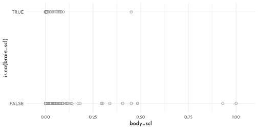
dagify(
Bs ~ B + Rb,
Rb ~ M,
B ~ M,
exposure = "M",
outcome = "Bs",
coords = tibble(name = c("M", "B", "Rb", "Bs"),
x = c( 0, 1, 0, 1 ),
y = c(1, 1, 0, 0))) %>%
fortify() %>%
mutate(stage = if_else(name == "Bs", "response",
if_else(name %in% c("M", "Rb", "Rg"),
"predictor", "confounds")),
name = str_replace(name, "Bs","B^'*'") %>%
str_replace( "Rb","R[B]")) %>%
plot_dag(clr_in = clr_current) +
coord_fixed(ratio = .75,
xlim = c(-.1, 1.1),
ylim = c(-.1, 1.1)) +
theme(plot.subtitle = element_text(hjust = .5,
family = fnt_sel))
data_primates_2_list <- data_primates_2 %>%
dplyr::select(brain_scl, body_scl) %>%
as.list()
model_primates_missing_default <- ulam(
flist = alist(
brain_scl ~ dlnorm( mu, sigma ),
mu <- alpha + beta * log( body_scl ),
alpha ~ normal( 0, 1 ),
beta ~ normal( 0, 1 ),
sigma ~ exponential(1)
),
data = data_primates_2_list,
cores = 4,
chains = 4,
start = list( brain_scl_impute = rep( .5, 56 ))
)
model_primates_missing_explicit <- ulam(
flist = alist(
brain_scl_merge ~ dlnorm( mu, sigma ),
mu <- alpha + beta * log( body_scl ),
brain_scl_merge <- merge_missing( brain_scl, brain_scl_impute ),
alpha ~ normal( 0, 1 ),
beta ~ normal( 0, 1 ),
sigma ~ exponential(1)
),
data = data_primates_2_list,
cores = 4,
chains = 4,
start = list( brain_scl_impute = rep( .5, 56 ))
)precis(model_primates_missing_default) %>%
knit_precis()| param | mean | sd | 5.5% | 94.5% | n_eff | Rhat4 |
|---|---|---|---|---|---|---|
| alpha | 0.43 | 0.06 | 0.34 | 0.52 | 825.24 | 1 |
| beta | 0.78 | 0.01 | 0.76 | 0.81 | 972.83 | 1 |
| sigma | 0.29 | 0.02 | 0.27 | 0.32 | 1495.86 | 1 |
precis(model_primates_missing_explicit) %>%
knit_precis()| param | mean | sd | 5.5% | 94.5% | n_eff | Rhat4 |
|---|---|---|---|---|---|---|
| alpha | 0.43 | 0.06 | 0.33 | 0.52 | 1148.76 | 1 |
| beta | 0.78 | 0.01 | 0.76 | 0.81 | 1184.11 | 1 |
| sigma | 0.29 | 0.02 | 0.27 | 0.32 | 1843.00 | 1 |
data_primates_3_list <- data_primates %>%
dplyr::select(name, brain_scl, body_scl ) %>%
as.list()
model_primates_missing_complete_cases <- ulam(
flist = alist(
brain_scl ~ dlnorm( mu, sigma ),
mu <- alpha + beta * log( body_scl ),
alpha ~ normal( 0, 1 ),
beta ~ normal( 0, 1 ),
sigma ~ exponential(1)
),
data = data_primates_3_list,
cores = 4,
chains = 4,
start = list( brain_scl_impute = rep( .5, 56 ))
)precis(model_primates_missing_complete_cases) %>%
knit_precis()| param | mean | sd | 5.5% | 94.5% | n_eff | Rhat4 |
|---|---|---|---|---|---|---|
| alpha | 0.43 | 0.06 | 0.34 | 0.52 | 776.91 | 1 |
| beta | 0.78 | 0.01 | 0.76 | 0.81 | 751.27 | 1 |
| sigma | 0.29 | 0.02 | 0.27 | 0.32 | 984.91 | 1 |
primates_impute_posterior <- extract.samples(model_primates_missing_default) %>%
as_tibble()
primates_impute_posterior$brain_scl_impute %>%
t() %>%
as_tibble() %>%
mutate(impute_idx = row_number()) %>%
pivot_longer(-impute_idx) %>%
group_by(impute_idx) %>%
summarise(pi = list(tibble(value = quantile(value, prob = c(.055, .25, .5, .75, .955)),
label = c("ll", "l", "m", "h", "hh")))) %>%
unnest(pi) %>%
pivot_wider(values_from = value, names_from = label) %>%
bind_cols(data_primates_2 %>%
filter(is.na(brain_scl)) %>%
dplyr::select(name, body_scl),.) %>%
ggplot(aes(x = body_scl)) +
geom_point(data = data_primates_2,
aes(y = brain_scl),
color = clr0dd, fill = fll0,
shape = 21) +
geom_linerange(aes(ymin = l, ymax = h),
color = clr_current) +
geom_point(aes(y = m), color = clr_current,
fill = clr_lighten(clr_current), shape = 21)
H6
data_waffle
model_waffle_init <- ulam(
flist = alist(
divorce_obs ~ dnorm( divorce_true, divorce_sd ),
vector[N]: divorce_true ~ dnorm( mu, sigma ),
mu <- alpha + beta_age * median_age_std + beta_marriage * marriage_true[i],
marriage_std ~ dnorm( marriage_true, marriage_sd ),
vector[N]:marriage_true ~ dnorm(mu_marriage, sigma_marriage),
mu_marriage <- alpha_marriage + beta_marriage_age * median_age_std,
c( alpha, alpha_marriage ) ~ dnorm( 0 ,.2 ),
c( beta_age, beta_marriage, beta_marriage_age) ~ dnorm( 0, .5 ),
sigma ~ dexp(1),
sigma_marriage ~ dexp(1)
),
data = data_waffle_list,
cores = 4,
chains = 4
)precis(model_waffle_init) %>%
knit_precis()| param | mean | sd | 5.5% | 94.5% | n_eff | Rhat4 |
|---|---|---|---|---|---|---|
| alpha_marriage | -0.11 | 0.08 | -0.23 | 0.01 | 2269.42 | 1.00 |
| alpha | -0.03 | 0.10 | -0.19 | 0.13 | 1812.57 | 1.00 |
| beta_marriage_age | -0.67 | 0.09 | -0.81 | -0.53 | 1910.76 | 1.00 |
| beta_marriage | 0.30 | 0.25 | -0.10 | 0.70 | 975.00 | 1.00 |
| beta_age | -0.46 | 0.19 | -0.76 | -0.17 | 1335.99 | 1.00 |
| sigma | 0.56 | 0.11 | 0.40 | 0.74 | 678.12 | 1.00 |
| sigma_marriage | 0.44 | 0.07 | 0.34 | 0.56 | 1015.78 | 1.01 |
precis(model_divorce_error_out) %>%
knit_precis()| param | mean | sd | 5.5% | 94.5% | n_eff | Rhat4 |
|---|---|---|---|---|---|---|
| alpha | -0.04 | 0.10 | -0.20 | 0.12 | 1038.56 | 1 |
| beta_age | -0.54 | 0.16 | -0.78 | -0.28 | 983.30 | 1 |
| beta_marriage | 0.20 | 0.21 | -0.13 | 0.53 | 766.98 | 1 |
| sigma | 0.57 | 0.11 | 0.41 | 0.75 | 570.34 | 1 |
get_inferred_true_val <- function(model){
mod <- rlang::enexpr(model)
extract.samples(model) %>%
as_tibble() %>%
pluck("marriage_true") %>%
as_tibble() %>%
t() %>%
as_tibble() %>%
mutate(.idx = row_number()) %>%
pivot_longer(-.idx) %>%
mutate(model = as.character(mod))
}
ls_states <- c("DC", "DE", "HI")
p1 <- get_inferred_true_val(model_divorce_error_out) %>%
bind_rows(get_inferred_true_val(model_waffle_init) ) %>%
group_by(.idx, model) %>%
summarise(mean = mean(value)) %>%
pivot_wider(values_from = mean, names_from = model) %>%
bind_cols(data_waffle %>% dplyr::select(Loc),. ) %>%
ggplot() +
geom_abline(slope = 1, intercept = 0, linetype = 3, color = clr_dark) +
geom_point(aes(x = model_divorce_error_out,
y = model_waffle_init),
color = clr0dd, fill = fll0,
shape = 21) +
ggrepel::geom_text_repel(
data = . %>%
filter(Loc %in% ls_states),
aes(x = model_divorce_error_out,
y = model_waffle_init,
label = Loc))
p2 <- data_waffle_list %>%
bind_cols(data_waffle %>% dplyr::select(Loc),. ) %>%
as_tibble() %>%
ggplot(aes(x = median_age_std, y = marriage_std)) +
geom_point(aes(color = Loc %in% ls_states,
fill = after_scale(clr_alpha(clr_lighten(color), .3))),
shape = 21) +
scale_color_manual(values = c(`TRUE` = clr_current,
`FALSE` = clr0dd),
guide = FALSE)
p1 + p2
H7
data_andrew <- tibble(freq = c( 18 , 19 , 22 , NA , NA , 19 , 20 , 22 ),
value = seq_along(freq)) %>%
dplyr::select(value, freq)
sum(data_andrew$freq, na.rm = TRUE)#> [1] 120Parameterizing the number of spins above 120,using a Poisson distribution with a mean of 40:
\[ S \sim \textrm{Poisson}(40) + 120 \]
p <- rdirichlet(1e3, alpha = rep(4, 8))
p1 <- p %>%
as_tibble() %>%
mutate(.idx = row_number()) %>%
pivot_longer(-.idx,
names_prefix = "V",
names_transform = as.integer,
names_to = "value",
values_to = "probability") %>%
filter(.idx < 9) %>%
ggplot(aes(x = value, y = probability)) +
geom_line(aes(group = .idx), color = clr0dd,
size = .4, linetype = 3) +
geom_point(color = clr0dd, fill = clr0, shape = 21)twicer <- function( p ) {
o <- order( p )
if ( p[o][8]/p[o][1] > 2 ) return( TRUE ) else return( FALSE )
}
sum( apply( p , 1 , twicer ) )#> [1] 976p <- rdirichlet( 1e3 , alpha = rep(50, 8) )
sum( apply( p , 1 , twicer ) )#> [1] 15p2 <- p %>%
as_tibble() %>%
mutate(.idx = row_number()) %>%
pivot_longer(-.idx,
names_prefix = "V",
names_transform = as.integer,
names_to = "value",
values_to = "probability") %>%
filter(.idx < 9) %>%
ggplot(aes(x = value, y = probability)) +
geom_line(aes(group = .idx), color = clr0dd,
size = .4, linetype = 3) +
geom_point(color = clr0dd, fill = clr0, shape = 21)
p1 + p2 &
coord_cartesian(ylim = c(0, .35))
code_andrew <- '
data{
int N;
int y[N];
int y_max; // consider at most this many spins for y4 and y5
int S_mean;
}
parameters{
simplex[N] p;
// probabilities of each outcome
}
model{
vector[(1+y_max)*(1+y_max)] terms;
int k = 1;
p ~ dirichlet( rep_vector(50,N) );
// loop over possible values for unknown cells 4 and 5
// this code updates posterior of p
for ( y4 in 0:y_max ) {
for ( y5 in 0:y_max ) {
int Y[N] = y;
Y[4] = y4;
Y[5] = y5;
terms[k] = poisson_lpmf(y4+y5|S_mean-120) + multinomial_lpmf(Y|p);
k = k + 1;
}//y5
}//y4
target += log_sum_exp(terms);
}
generated quantities{
matrix[y_max+1,y_max+1] P45; // prob y4,y5 takes joint values
// now compute Prob(y4,y5|p)
{
matrix[(1+y_max),(1+y_max)] terms;
int k = 1;
real Z;
for ( y4 in 0:y_max ) {
for ( y5 in 0:y_max ) {
int Y[N] = y;
Y[4] = y4;
Y[5] = y5;
terms[y4+1,y5+1] = poisson_lpmf(y4+y5|S_mean-120) + multinomial_lpmf(Y|p);
}//y5
}//y4
Z = log_sum_exp( to_vector(terms) );
for ( y4 in 0:y_max )
for ( y5 in 0:y_max )
P45[y4+1,y5+1] = exp( terms[y4+1,y5+1] - Z );
}
}
'
y <- c(18, 19, 22, -1,
-1, 19, 20, 22)
data_andrew_list <- list(
N = length(y),
y = y,
S_mean = 160,
y_max = 40 )
model_andrew <- stan(
model_code = code_andrew,
data = data_andrew_list,
chains = 4,
cores = 4 )andrew_posterior <- extract.samples(model_andrew) %>%
as_tibble()
y_max <- data_andrew_list$y_max
extract_k <- function(y4, y5, posterior){
k <- mean( posterior$P45[,y4+1,y5+1] )/0.01
tibble( x = y4 , y = y5 , k = k )
}
andrew_k <- crossing(y4 = 0:y_max, y5 = 0:y_max) %>%
pmap_df(extract_k, posterior = andrew_posterior)
p1 <- andrew_k %>%
filter(between(x,10, 30),
between(y,10, 30)) %>%
ggplot(aes(x , y, color = k)) +
geom_point(shape = 21,
size = 3,
aes(fill = after_scale(clr_alpha(color,.8))))+
labs(subtitle = " dirichlet( rep_vector(50, N) )")code_andrew2 <- '
data{
int N;
int y[N];
int y_max; // consider at most this many spins for y4 and y5
int S_mean;
}
parameters{
simplex[N] p;
// probabilities of each outcome
}
model{
vector[(1+y_max)*(1+y_max)] terms;
int k = 1;
p ~ dirichlet( rep_vector(2,N) );
// loop over possible values for unknown cells 4 and 5
// this code updates posterior of p
for ( y4 in 0:y_max ) {
for ( y5 in 0:y_max ) {
int Y[N] = y;
Y[4] = y4;
Y[5] = y5;
terms[k] = poisson_lpmf(y4+y5|S_mean-120) + multinomial_lpmf(Y|p);
k = k + 1;
}//y5
}//y4
target += log_sum_exp(terms);
}
generated quantities{
matrix[y_max+1,y_max+1] P45; // prob y4,y5 takes joint values
// now compute Prob(y4,y5|p)
{
matrix[(1+y_max),(1+y_max)] terms;
int k = 1;
real Z;
for ( y4 in 0:y_max ) {
for ( y5 in 0:y_max ) {
int Y[N] = y;
Y[4] = y4;
Y[5] = y5;
terms[y4+1,y5+1] = poisson_lpmf(y4+y5|S_mean-120) + multinomial_lpmf(Y|p);
}//y5
}//y4
Z = log_sum_exp( to_vector(terms) );
for ( y4 in 0:y_max )
for ( y5 in 0:y_max )
P45[y4+1,y5+1] = exp( terms[y4+1,y5+1] - Z );
}
}
'
model_andrew2 <- stan(
model_code = code_andrew2,
data = data_andrew_list,
chains = 4,
cores = 4 )andrew_posterior2 <- extract.samples(model_andrew2) %>%
as_tibble()
andrew_k2 <- crossing(y4 = 0:y_max, y5 = 0:y_max) %>%
pmap_df(extract_k, posterior = andrew_posterior2)
p2 <- andrew_k2 %>%
filter(between(x,0, 40),
between(y,0, 40)) %>%
ggplot(aes(x , y, color = k)) +
geom_point(shape = 21,
size = 1,
aes(fill = after_scale(clr_alpha(color,.8)))) +
labs(subtitle = " dirichlet( rep_vector(2, N) )")
p1 + p2 &
scale_color_gradientn(colours = c(clr0, clr_current),
guide = "none") &
labs(x = "number of 4s",
y = "number of 5s") &
coord_equal()
16.5 {brms} section
16.5.1 Measurement Error
16.5.1.1 Error on the Outcome
With brms, we accommodate measurement error in the criterion using the
mi()syntax, following the general form<response> | mi(<se_response>). This follows a missing data logic, resulting in Bayesian missing data imputation for the criterion values. Themi()syntax is based on the missing data capabilities for brms, which we will cover in greater detail in the second half of this chapter.
data_waffle_brms <- data_waffle %>%
dplyr::select(Loc, divorce_obs = divorce_std,
divorce_sd, marriage_std,
median_age_std, marriage_sd)
brms_c15_model_divorce <- brm(
data = data_waffle_brms,
family = gaussian,
divorce_obs | mi(divorce_sd) ~ 1 +
median_age_std +
marriage_std,
prior = c(prior(normal(0, 0.2), class = Intercept),
prior(normal(0, 0.5), class = b),
prior(exponential(1), class = sigma)),
iter = 2000, warmup = 1000,
cores = 4, chains = 4,
seed = 42,
# note this line
save_pars = save_pars(latent = TRUE),
file = "brms/brms_c15_model_divorce")
print(brms_c15_model_divorce)#> Family: gaussian
#> Links: mu = identity; sigma = identity
#> Formula: divorce_obs | mi(divorce_sd) ~ 1 + median_age_std + marriage_std
#> Data: data_waffle_brms (Number of observations: 50)
#> Draws: 4 chains, each with iter = 2000; warmup = 1000; thin = 1;
#> total post-warmup draws = 4000
#>
#> Population-Level Effects:
#> Estimate Est.Error l-95% CI u-95% CI Rhat Bulk_ESS Tail_ESS
#> Intercept -0.06 0.09 -0.24 0.13 1.00 4477 3324
#> median_age_std -0.61 0.16 -0.92 -0.29 1.00 3686 3307
#> marriage_std 0.06 0.16 -0.26 0.39 1.00 3389 3273
#>
#> Family Specific Parameters:
#> Estimate Est.Error l-95% CI u-95% CI Rhat Bulk_ESS Tail_ESS
#> sigma 0.58 0.11 0.39 0.81 1.00 1278 1962
#>
#> Draws were sampled using sampling(NUTS). For each parameter, Bulk_ESS
#> and Tail_ESS are effective sample size measures, and Rhat is the potential
#> scale reduction factor on split chains (at convergence, Rhat = 1).posterior_summary(brms_c15_model_divorce) %>%
round(digits = 2) %>%
as.data.frame() %>%
rownames_to_column(var = "param") %>%
as_tibble()#> # A tibble: 55 × 5
#> param Estimate Est.Error Q2.5 Q97.5
#> <chr> <dbl> <dbl> <dbl> <dbl>
#> 1 b_Intercept -0.06 0.09 -0.24 0.13
#> 2 b_median_age_std -0.61 0.16 -0.92 -0.29
#> 3 b_marriage_std 0.06 0.16 -0.26 0.39
#> 4 sigma 0.58 0.11 0.39 0.81
#> 5 Yl[1] 1.16 0.37 0.46 1.9
#> 6 Yl[2] 0.69 0.56 -0.41 1.78
#> 7 Yl[3] 0.42 0.35 -0.25 1.13
#> 8 Yl[4] 1.41 0.46 0.52 2.32
#> 9 Yl[5] -0.9 0.13 -1.16 -0.65
#> 10 Yl[6] 0.66 0.41 -0.15 1.48
#> # … with 45 more rowsstates <- c("AL", "AR", "ME", "NH", "RI", "DC", "VT",
"AK", "SD", "UT", "ID", "ND", "WY")
divorce_est <- posterior_summary(brms_c15_model_divorce) %>%
data.frame() %>%
rownames_to_column("term") %>%
as_tibble() %>%
mutate(divorce_est = Estimate) %>%
dplyr::select(term, divorce_est) %>%
filter(str_detect(term, "Yl")) %>%
bind_cols(data_waffle_brms)
p1 <- divorce_est %>%
ggplot(aes(x = divorce_sd,
y = divorce_est - divorce_obs)) +
geom_hline(yintercept = 0, linetype = 3,
color = clr_dark) +
geom_point(color = clr0dd, fill = clr0, shape = 21) +
ggrepel::geom_text_repel(data = . %>%
filter(Loc %in% states),
aes(label = Loc),
size = 3, seed = 15,
family = fnt_sel)
library(tidybayes)
states <- c("AR", "ME", "RI", "ID", "WY", "ND", "MN")
p2 <- as_draws_df(brms_c15_model_divorce) %>%
as_tibble() %>%
expand(nesting(b_Intercept, b_median_age_std),
median_age_std = seq(from = -3.5, to = 3.5, length.out = 50)) %>%
mutate(fitted = b_Intercept +
b_median_age_std * median_age_std) %>%
ggplot(aes(x = median_age_std)) +
stat_lineribbon(aes(y = fitted),
.width = .89, size = .2,
color = clr0dd, fill = fll0) +
geom_segment(data = divorce_est,
aes(xend = median_age_std,
y = divorce_obs, yend = divorce_est),
size = .2) +
geom_point(data = divorce_est,
aes(y = divorce_obs),
color = clr0dd,
shape = 19) +
geom_point(data = divorce_est,
aes(y = divorce_est),
shape = 21,
size = 2,
color = clr0dd, fill = "white",
stroke = .4) +
ggrepel::geom_text_repel(data = data_waffle_brms %>%
filter(Loc %in% states),
aes(y = divorce_obs, label = Loc),
size = 3, seed = 15, family = fnt_sel) +
labs(x = "median age marriage (std)",
y = "divorce rate (std)") +
coord_cartesian(xlim = range(data_waffle_brms$median_age_std),
ylim = range(data_waffle_brms$divorce_obs))
p1 + p2
16.5.1.2 Error on Both Outcome and Predictor
brms_c15_model_divorce_error_out <- brm(
data = data_waffle_brms,
family = gaussian,
divorce_obs | mi(divorce_sd) ~ 1 +
median_age_std +
me(marriage_std, marriage_sd),
prior = c(prior(normal(0, 0.2), class = Intercept),
prior(normal(0, 0.5), class = b),
prior(normal(0, 1), class = meanme),
prior(exponential(1), class = sigma)),
iter = 2000, warmup = 1000,
cores = 4, chains = 4,
seed = 42,
# note this line
save_pars = save_pars(latent = TRUE),
file = "brms/brms_c15_model_divorce_error_out")
posterior_summary(brms_c15_model_divorce_error_out) %>%
round(digits = 2) %>%
as.data.frame() %>%
rownames_to_column(var = "param") %>%
as_tibble()#> # A tibble: 107 × 5
#> param Estimate Est.Error Q2.5 Q97.5
#> <chr> <dbl> <dbl> <dbl> <dbl>
#> 1 b_Intercept -0.03 0.1 -0.22 0.16
#> 2 b_median_age_std -0.52 0.16 -0.82 -0.21
#> 3 bsp_memarriage_stdmarriage_sd 0.26 0.22 -0.17 0.69
#> 4 sigma 0.55 0.11 0.35 0.79
#> 5 Yl[1] 1.13 0.38 0.39 1.86
#> 6 Yl[2] 0.72 0.54 -0.29 1.81
#> 7 Yl[3] 0.43 0.33 -0.21 1.1
#> 8 Yl[4] 1.45 0.47 0.54 2.4
#> 9 Yl[5] -0.9 0.13 -1.15 -0.65
#> 10 Yl[6] 0.71 0.4 -0.05 1.53
#> # … with 97 more rowspull_estimate <- function(model, term_q){
posterior_summary(model) %>%
data.frame() %>%
rownames_to_column("term") %>%
filter(str_detect(term, term_q)) %>%
pull(Estimate)
}
full_join(
# D
data_waffle_brms %>%
dplyr::select(Loc, divorce_obs) %>%
mutate(marriage_est = pull_estimate(brms_c15_model_divorce_error_out,
"Yl")) %>%
pivot_longer(-Loc, values_to = "divorce") %>%
mutate(name = if_else(name == "divorce_obs",
"observed", "posterior")),
# M
data_waffle_brms %>%
dplyr::select(Loc, marriage_std) %>%
mutate(marriage_est = pull_estimate(brms_c15_model_divorce_error_out,
"Xme_")) %>%
pivot_longer(-Loc, values_to = "marriage") %>%
mutate(name = if_else(name == "marriage_std",
"observed", "posterior")),
by = c("Loc", "name")) %>%
ggplot(aes(x = marriage, y = divorce)) +
geom_line(aes(group = Loc),
size = .2, color = clr0dd) +
geom_point(aes(shape = name),
color = clr0dd, fill = clr0) +
scale_shape_manual(values = c(observed = 21, posterior = 19), guide = "none") +
labs(subtitle = "Shrinkage of both divorce rate and marriage rate")
16.5.1.3 Measurement Terrors
data_sim#> # A tibble: 500 × 4
#> age marriage divorce age_obs
#> <dbl> <dbl> <dbl> <dbl>
#> 1 -0.172 1.14 0.536 -0.231
#> 2 -0.564 -1.09 -0.477 -1.24
#> 3 0.252 -0.922 -0.326 -0.746
#> 4 0.0798 -1.20 -0.696 -0.113
#> 5 0.818 -2.20 1.99 0.160
#> 6 -0.164 1.05 0.143 0.698
#> 7 0.797 0.413 1.37 -1.88
#> 8 0.435 -2.03 -1.03 1.51
#> 9 -0.254 -0.484 -0.240 -0.00495
#> 10 -0.0502 -0.287 -0.0359 -0.800
#> # … with 490 more rowsTo get a sense of the havoc ignoring measurement error can cause, we’ll fit to models. These aren’t in the text, but, you know, let’s live a little. The first model will include
age, the true predictor fordivorce. The second model will includeage_obsinstead, the version ofagewith measurement error added in.
# the model with age containing no measurement error
brms_c15_model_sim_a <- brm(
data = data_sim,
family = gaussian,
divorce ~ 1 + age + marriage,
prior = c(prior(normal(0, 0.2), class = Intercept),
prior(normal(0, 0.5), class = b),
prior(exponential(1), class = sigma)),
iter = 2000, warmup = 1000,
cores = 4, chains = 4,
seed = 42,
# note this line
save_pars = save_pars(latent = TRUE),
file = "brms/brms_c15_model_sim_a")
# The model where age has measurement error, but we ignore it
brms_c15_model_sim_b <- brm(
data = data_sim,
family = gaussian,
divorce ~ 1 + age_obs + marriage,
prior = c(prior(normal(0, 0.2), class = Intercept),
prior(normal(0, 0.5), class = b),
prior(exponential(1), class = sigma)),
iter = 2000, warmup = 1000,
cores = 4, chains = 4,
seed = 42,
# note this line
save_pars = save_pars(latent = TRUE),
file = "brms/brms_c15_model_sim_b")
bind_rows(posterior_summary(brms_c15_model_sim_a) %>%
data.frame() %>%
rownames_to_column("term") %>%
mutate(model = "model_a"),
posterior_summary(brms_c15_model_sim_b) %>%
data.frame() %>%
rownames_to_column("term") %>%
mutate(model = "model_b")) %>%
filter(term != "lp__") %>%
mutate(term = str_remove(term,"_obs") %>%
str_remove("b_") %>%
factor(levels = c("Intercept",
"age",
"marriage",
"sigma"))) %>%
ggplot(aes(x = Estimate, y = model)) +
geom_vline(xintercept = 0, linetype = 3,
color = clr_dark) +
geom_pointrange(aes(xmin = Q2.5, xmax = Q97.5,
color = model)) +
scale_color_manual(values = c(model_a = clr0dd,
model_b = clr0d),
guide = "none") +
labs(x = "marginal posterior",
y = NULL) +
facet_wrap(~ term, ncol = 1) +
theme(panel.background = element_rect(fill = "transparent",
color = clr0d))
16.5.2 Missing Data
16.5.2.1 DAG Ate my Homework
data_homework_c_brms <- data_homework_c %>%
as_tibble()
p1 <- data_homework_c_brms %>%
ggplot(aes(x = study, y = homework)) +
geom_point(color = fll0dd) +
scale_y_continuous(breaks = 1:10) +
labs(subtitle = "true distribution")
p2 <- data_homework_c_brms %>%
ggplot(aes(x = study, y = homework_missing)) +
geom_point(color = fll0dd) +
scale_y_continuous(breaks = 1:10) +
labs(subtitle = "missing conditional on x")
p1 + p2
brms_c15_model_hw_full <- brm(
data = data_homework_c_brms,
family = binomial,
homework | trials(10) ~ 1 + study,
prior = c(prior(normal(0, 1), class = Intercept),
prior(normal(0, 0.5), class = b)),
iter = 2000, warmup = 1000,
chains = 4, cores = 4,
seed = 42,
file = "brms/brms_c15_model_hw_full")
mixedup::extract_fixef(brms_c15_model_hw_full)#> # A tibble: 2 × 5
#> term value se lower_2.5 upper_97.5
#> <chr> <dbl> <dbl> <dbl> <dbl>
#> 1 Intercept 1.25 0.025 1.20 1.30
#> 2 study 0.609 0.026 0.558 0.661brms_c15_model_hw_missing <- brm(
data = data_homework_c_brms %>%
filter(dog == 0),
family = binomial,
homework | trials(10) ~ 1 + study,
prior = c(prior(normal(0, 1), class = Intercept),
prior(normal(0, 0.5), class = b)),
iter = 2000, warmup = 1000,
chains = 4, cores = 4,
seed = 42,
file = "brms/brms_c15_model_hw_missing")
mixedup::extract_fixef(brms_c15_model_hw_missing)#> # A tibble: 2 × 5
#> term value se lower_2.5 upper_97.5
#> <chr> <dbl> <dbl> <dbl> <dbl>
#> 1 Intercept 3.06 0.076 2.92 3.21
#> 2 study 0.895 0.063 0.775 1.02data_homework_c_brms2 <- data_homework_c_brms %>%
mutate(dog = ifelse(abs(x) < 1, 1, 0)) %>%
mutate(homework_missing = ifelse(dog == 1, NA_integer_, homework))
p1 <- data_homework_c_brms2 %>%
ggplot(aes(x = study, y = homework)) +
geom_point(color = fll0dd) +
scale_y_continuous(breaks = 1:10) +
labs(subtitle = "true distribution")
p2 <- data_homework_c_brms2 %>%
ggplot(aes(x = study, y = homework_missing)) +
geom_point(color = fll0dd) +
scale_y_continuous(breaks = 1:10) +
labs(subtitle = "missing conditional on x")
p1 + p2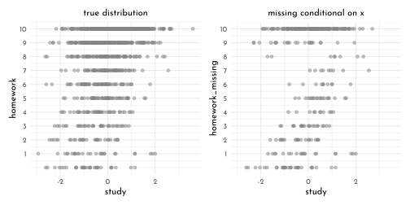
brms_c15_model_hw_missing2 <- brm(
data = data_homework_c_brms2 %>%
filter(dog == 0),
family = binomial,
homework | trials(10) ~ 1 + study,
prior = c(prior(normal(0, 1), class = Intercept),
prior(normal(0, 0.5), class = b)),
iter = 2000, warmup = 1000,
chains = 4, cores = 4,
seed = 42,
file = "brms/brms_c15_model_hw_missing2")
mixedup::extract_fixef(brms_c15_model_hw_missing2)#> # A tibble: 2 × 5
#> term value se lower_2.5 upper_97.5
#> <chr> <dbl> <dbl> <dbl> <dbl>
#> 1 Intercept 0.731 0.038 0.655 0.807
#> 2 study 0.354 0.039 0.28 0.43116.5.2.2 Imputing primates
data_milk_brms <- data_milk_full %>%
dplyr::select(species, kcal_std,
neocortex_std, mass_std)When writing a multivariate model in brms, I find it easier to save the model code by itself and then insert it into the
brm()function. Otherwise, things start to feel cluttered.
# here's the primary `k` model
b_model <- bf(kcal_std ~ 1 +
mi(neocortex_std) +
mass_std) +
# here's the model for the missing `b` data
bf(neocortex_std | mi() ~ 1) +
# here we set the residual correlations for the two models to zero
set_rescor(FALSE)Note the
mi(neocortex_std)syntax in thekcal_stdmodel. This indicates that the predictor,neocortex_std, has missing values that are themselves being modeled. To get a sense of how to specify the priors for such a model in brms, use theget_prior()function.
get_prior(data = data_milk_brms,
family = gaussian,
b_model)#> prior class coef group resp dpar
#> (flat) b
#> (flat) Intercept
#> (flat) b kcalstd
#> (flat) b mass_std kcalstd
#> (flat) b mineocortex_std kcalstd
#> student_t(3, -0.3, 2.5) Intercept kcalstd
#> student_t(3, 0, 2.5) sigma kcalstd
#> student_t(3, 0.2, 2.5) Intercept neocortexstd
#> student_t(3, 0, 2.5) sigma neocortexstd
#> nlpar bound source
#> default
#> default
#> (vectorized)
#> (vectorized)
#> (vectorized)
#> default
#> default
#> default
#> defaultbrms_c15_model_primates_imputed <- brm(
data = data_milk_brms,
family = gaussian,
b_model, # here we insert the model
prior = c(prior(normal(0, 0.5), class = Intercept, resp = kcalstd),
prior(normal(0, 0.5), class = Intercept, resp = neocortexstd),
prior(normal(0, 0.5), class = b, resp = kcalstd),
prior(exponential(1), class = sigma, resp = kcalstd),
prior(exponential(1), class = sigma, resp = neocortexstd)),
iter = 2000, warmup = 1000,
chains = 4, cores = 4,
seed = 42,
file = "brms/brms_c15_model_primates_imputed")mixedup::extract_fixef(brms_c15_model_primates_imputed)#> # A tibble: 4 × 5
#> term value se lower_2.5 upper_97.5
#> <chr> <dbl> <dbl> <dbl> <dbl>
#> 1 kcalstd_Intercept 0.027 0.162 -0.303 0.345
#> 2 neocortexstd_Intercept -0.045 0.21 -0.46 0.36
#> 3 kcalstd_mass_std -0.526 0.209 -0.93 -0.093
#> 4 kcalstd_mineocortex_std 0.473 0.242 -0.018 0.935posterior_summary(brms_c15_model_primates_imputed) %>%
round(digits = 2) %>%
as.data.frame() %>%
rownames_to_column(var = "param") %>%
as_tibble()#> # A tibble: 19 × 5
#> param Estimate Est.Error Q2.5 Q97.5
#> <chr> <dbl> <dbl> <dbl> <dbl>
#> 1 b_kcalstd_Intercept 0.03 0.16 -0.3 0.34
#> 2 b_neocortexstd_Intercept -0.05 0.21 -0.46 0.36
#> 3 b_kcalstd_mass_std -0.53 0.21 -0.93 -0.09
#> 4 bsp_kcalstd_mineocortex_std 0.47 0.24 -0.02 0.93
#> 5 sigma_kcalstd 0.86 0.15 0.61 1.18
#> 6 sigma_neocortexstd 1.02 0.18 0.74 1.41
#> 7 Ymi_neocortexstd[2] -0.54 0.96 -2.42 1.34
#> 8 Ymi_neocortexstd[3] -0.66 0.99 -2.6 1.29
#> 9 Ymi_neocortexstd[4] -0.68 0.96 -2.55 1.25
#> 10 Ymi_neocortexstd[5] -0.27 0.92 -2.06 1.58
#> 11 Ymi_neocortexstd[9] 0.46 0.93 -1.35 2.28
#> 12 Ymi_neocortexstd[14] -0.15 0.93 -1.9 1.74
#> 13 Ymi_neocortexstd[15] 0.21 0.9 -1.55 2.02
#> 14 Ymi_neocortexstd[17] 0.26 0.92 -1.57 2.1
#> 15 Ymi_neocortexstd[19] 0.48 0.94 -1.38 2.31
#> 16 Ymi_neocortexstd[21] -0.43 0.92 -2.21 1.4
#> 17 Ymi_neocortexstd[23] -0.28 0.93 -2.1 1.64
#> 18 Ymi_neocortexstd[26] 0.14 0.94 -1.75 1.94
#> 19 lp__ -81.6 4.03 -90.6 -74.9as_draws_df(brms_c15_model_primates_imputed) %>%
dplyr::select(starts_with("Ymi_neocortex")) %>%
set_names(filter(data_milk_brms,
is.na(neocortex_std)) %>%
pull(species)) %>%
pivot_longer(everything(),
names_to = "species") %>%
ggplot(aes(x = value,
y = reorder(species, value))) +
stat_slab(fill = fll0, height = 1.5,
slab_color = clr0dd, slab_size = .2) +
labs(x = "imputed values for b",
y = NULL) +
theme(axis.text.y = element_text(hjust = 0, face = 'italic'),
axis.ticks.y = element_blank())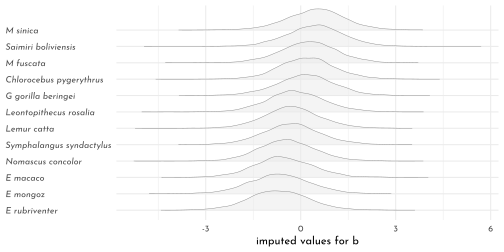
brms_c15_model_primates_drop_na <- brm(
data = data_milk_brms,
family = gaussian,
kcal_std ~ 1 + neocortex_std + mass_std,
prior = c(prior(normal(0, 0.5), class = Intercept),
prior(normal(0, 0.5), class = b),
prior(exponential(1), class = sigma)),
iter = 2000, warmup = 1000,
chains = 4, cores = 4,
seed = 42,
file = "brms/brms_c15_model_primates_drop_na")#> Warning message:
#> Rows containing NAs were excluded from the model. bind_rows(fixef(brms_c15_model_primates_imputed) %>%
data.frame() %>%
rownames_to_column("term") %>%
mutate(fit ="primates_imputed"),
fixef(brms_c15_model_primates_drop_na) %>%
data.frame() %>%
rownames_to_column("term") %>%
mutate(fit = "primates_drop_na")) %>%
slice(c(4:3, 6:7)) %>%
mutate(term = term %>%
str_remove("kcalstd_") %>%
str_remove("^mi") )%>%
ggplot(aes(x = Estimate, y = fit)) +
geom_vline(xintercept = 0, linetype = 3,
color = clr_dark) +
geom_pointrange(aes(xmin = Q2.5, xmax = Q97.5),
color = clr0dd, fill = clr0,
shape = 21, stroke = .6) +
facet_wrap(. ~ term, ncol = 1) +
labs(x = "marginal posterior",
y = NULL) +
theme(axis.ticks.y = element_blank(),
strip.background = element_rect(color = "transparent", fill = "transparent"),
panel.background = element_rect(fill = 'transparent',
color = clr0d))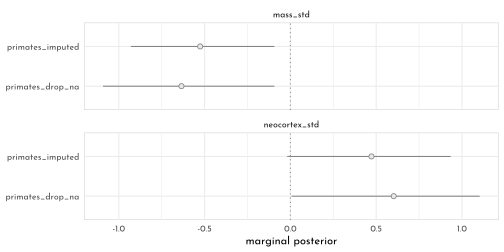
data_milk_brms_imputed <- data_milk_brms %>%
mutate(row = row_number()) %>%
left_join(
posterior_summary(brms_c15_model_primates_imputed) %>%
data.frame() %>%
rownames_to_column("term") %>%
filter(str_detect(term, "Ymi")) %>%
mutate(row = str_extract(term, "(\\d)+") %>%
as.integer()),
by = "row")
p1 <- data_milk_brms_imputed %>%
ggplot(aes(y = kcal_std)) +
geom_pointrange(aes(x = Estimate,
xmin = Q2.5, xmax = Q97.5),
shape = 21, size = .5, stroke = .75,
color = clr_dark, fill = clr0) +
geom_point(aes(x = neocortex_std),
color = clr0d) +
labs(x = "neocortex percent (std)",
y = "kcal milk (std)") +
coord_cartesian(xlim = range(data_milk_brms_imputed$neocortex_std, na.rm = T))
p2 <- data_milk_brms_imputed %>%
ggplot(aes(x = mass_std)) +
geom_pointrange(aes(y = Estimate,
ymin = Q2.5, ymax = Q97.5),
shape = 21, size = .5, stroke = .75,
color = clr_dark, fill = clr0) +
geom_point(aes(y = neocortex_std),
color = clr0d) +
labs(x = "log body mass (std)",
y = "neocortex percent (std)") +
coord_cartesian(ylim = range(data_milk_brms_imputed$neocortex_std, na.rm = T))
p1 + p2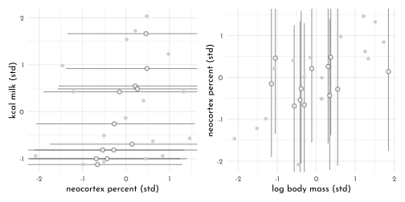
b_model <- mvbf(
bf(kcal_std ~ 1 + mi(neocortex_std) + mass_std),
bf(neocortex_std | mi() ~ 1 + mass_std),
rescor = FALSE)
brms_c15_model_primates_impute_covar <- brm(
data = data_milk_brms,
family = gaussian,
b_model,
prior = c(prior(normal(0, 0.5), class = Intercept, resp = kcalstd),
prior(normal(0, 0.5), class = Intercept, resp = neocortexstd),
prior(normal(0, 0.5), class = b, resp = kcalstd),
prior(normal(0, 0.5), class = b, resp = neocortexstd),
prior(exponential(1), class = sigma, resp = kcalstd),
prior(exponential(1), class = sigma, resp = neocortexstd)),
iter = 2000, warmup = 1000,
chains = 4, cores = 4,
seed = 42,
file = "brms/brms_c15_model_primates_impute_covar")
data_milk_brms_imputed2 <- data_milk_brms %>%
mutate(row = row_number()) %>%
left_join(
posterior_summary(brms_c15_model_primates_impute_covar) %>%
data.frame() %>%
rownames_to_column("term") %>%
filter(str_detect(term, "Ymi")) %>%
mutate(row = str_extract(term, "(\\d)+") %>% as.integer()),
by = "row"
)
p1 <- data_milk_brms_imputed2 %>%
ggplot(aes(y = kcal_std)) +
geom_pointrange(aes(x = Estimate,
xmin = Q2.5, xmax = Q97.5),
shape = 21, size = .5, stroke = .75,
color = clr_dark, fill = clr0) +
geom_point(aes(x = neocortex_std),
color = clr0d) +
labs(x = "neocortex percent (std)",
y = "kcal milk (std)") +
coord_cartesian(xlim = range(data_milk_brms_imputed$neocortex_std, na.rm = T))
p2 <- data_milk_brms_imputed2 %>%
ggplot(aes(x = mass_std)) +
geom_pointrange(aes(y = Estimate,
ymin = Q2.5, ymax = Q97.5),
shape = 21, size = .5, stroke = .75,
color = clr_dark, fill = clr0) +
geom_point(aes(y = neocortex_std),
color = clr0d) +
labs(x = "log body mass (std)",
y = "neocortex percent (std)") +
coord_cartesian(ylim = range(data_milk_brms_imputed$neocortex_std, na.rm = T))
p1 + p2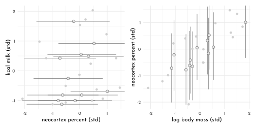